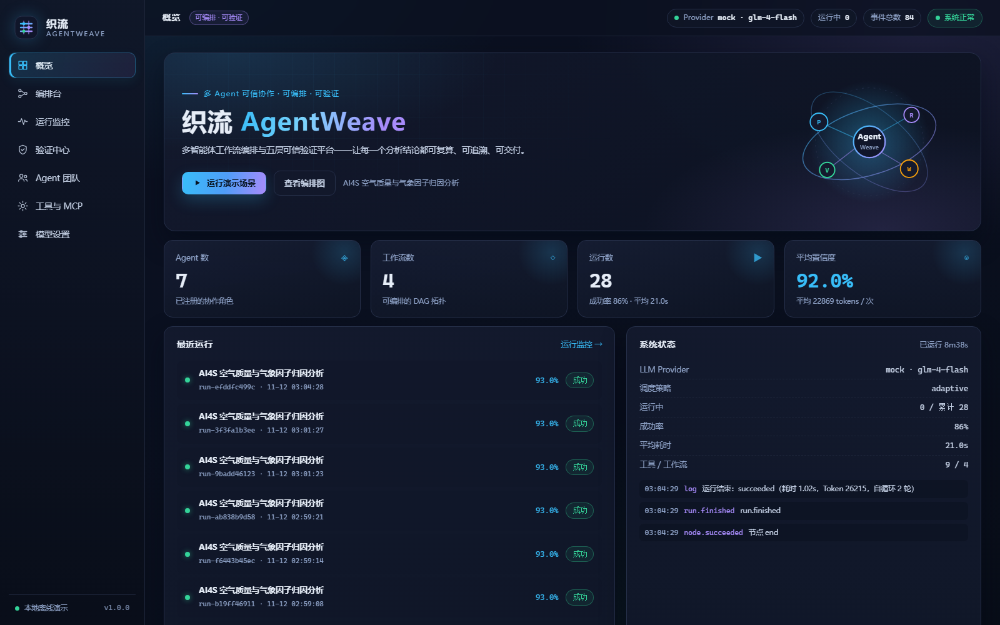
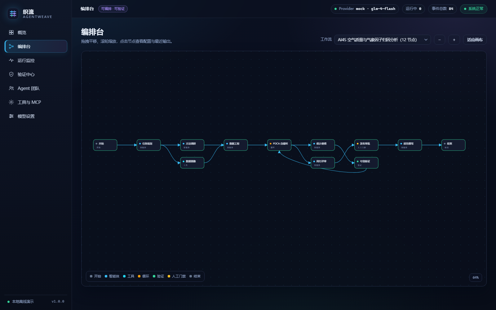
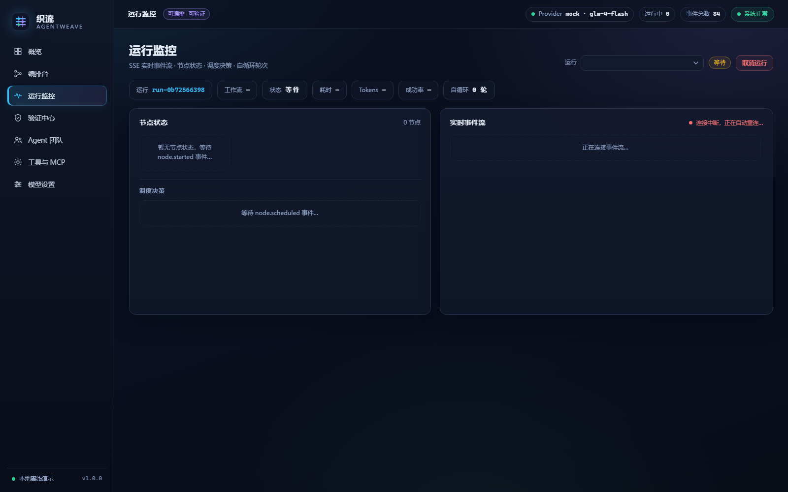
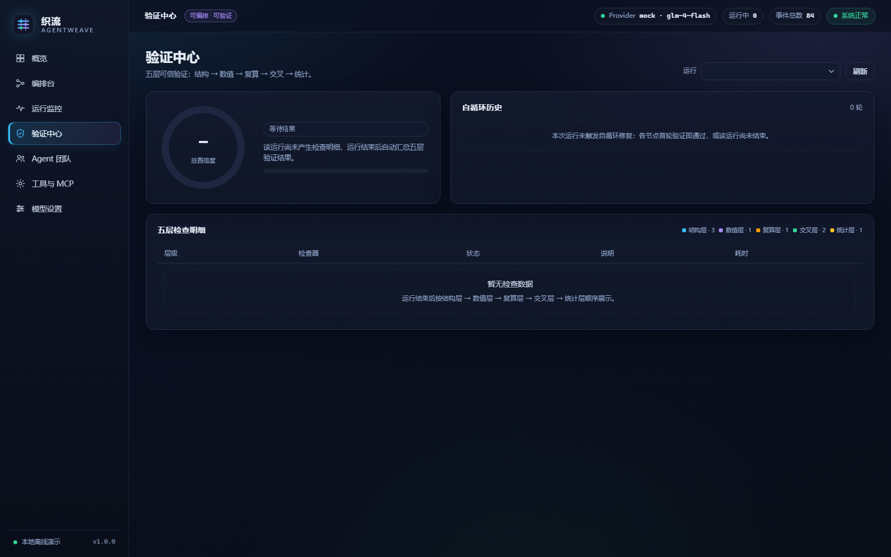
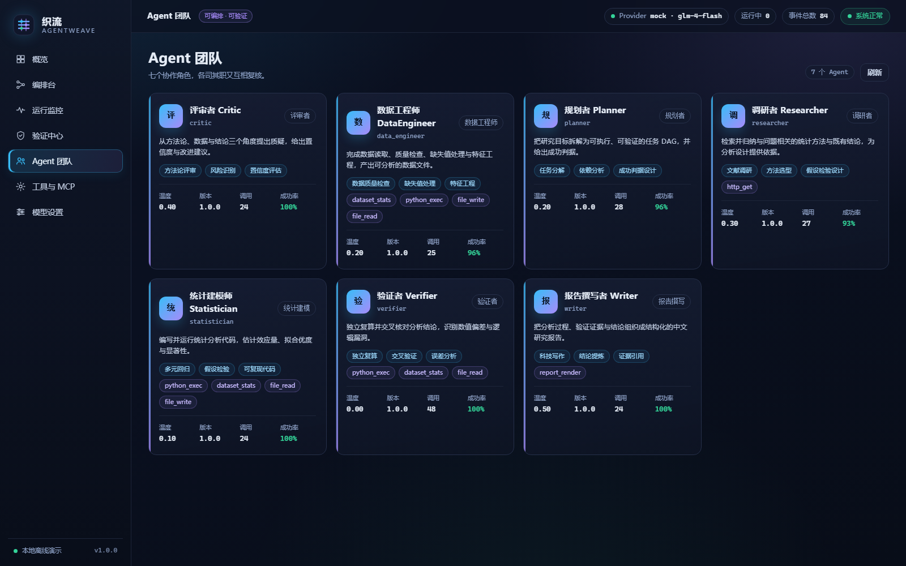
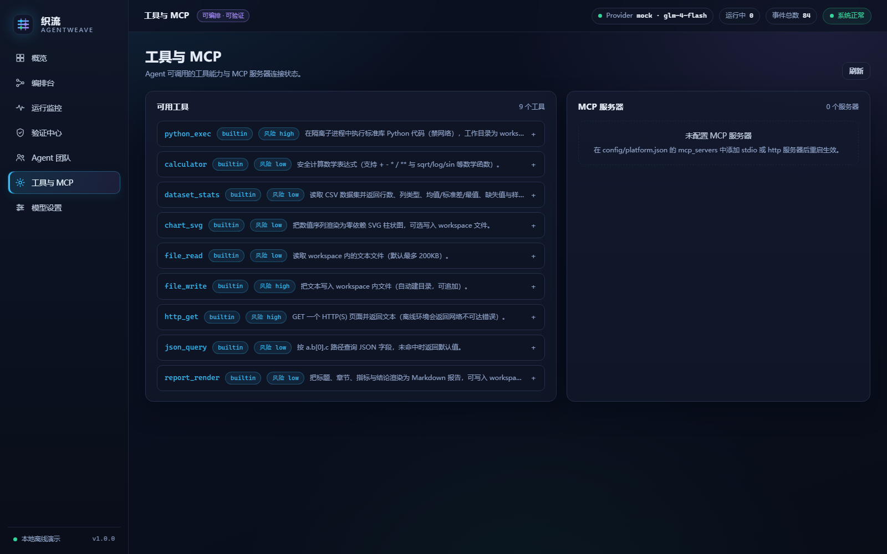
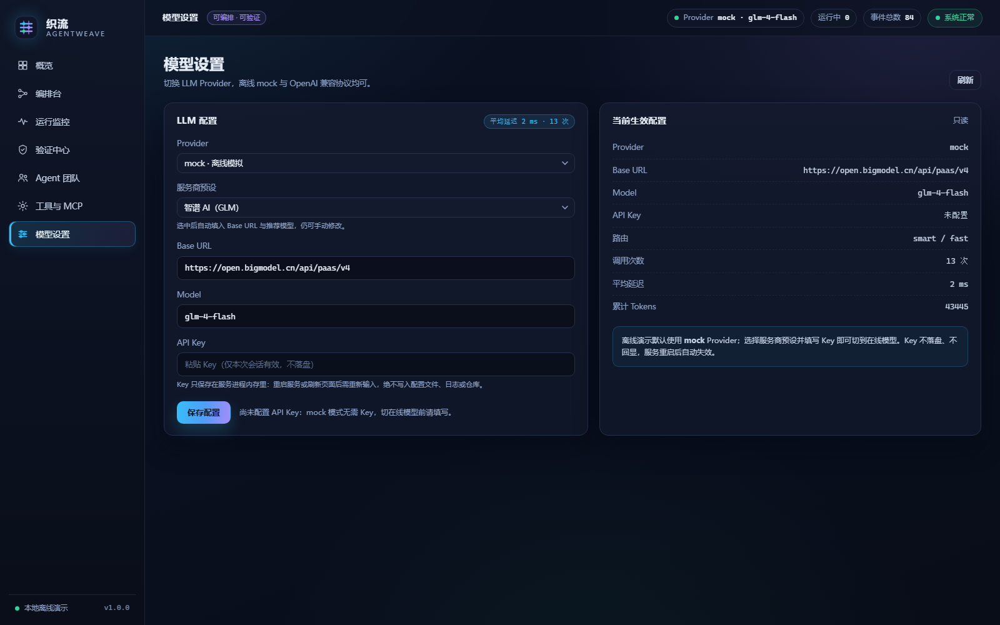

| 项目 | 内容 |
|---|---|
| 作品名称 | 织流 AgentWeave 多智能体编排调度与可信验证平台 |
| 参赛赛题 | 赛题一：Agent 编排创新应用 |
| 队伍名称 | 织流 AgentWeave |
| 学校 / 单位 | 石家庄信息工程职业学院 |
| 队伍成员 | 张康博 |
| 指导教师 | 徐宇丰 |
| 提交日期 | 2026-11-12 |
| 代码仓库 | 本方案书随附完整可运行仓库（纯 Python 标准库，零第三方依赖） |
结论：多智能体系统的主要矛盾已经从“模型能不能完成任务”转移到“工程上能不能管住任务”。 当前大量 Agent 作品停留在演示阶段：流程写死在代码里、任务分派靠串行与人工指定、结果由模型自评“我做对了”、失败后没有结构化反馈。织流 AgentWeave 把 Agent 系统当作生产系统建设，围绕可编排、可调度、可验证、能自愈四件事给出一套可运行、可复现、可审计的工程实现。
平台以工作流 DAG（Directed Acyclic Graph，有向无环图）为编排模型，提供顺序、并行、条件分支、循环、子工作流、人工闸门六类控制语义；以能力画像 + 实时负载 + 依赖就绪度 + 优先级的加权打分调度器替代串行分派，并把每次调度的 score / reason / agent_load 通过事件总线暴露给前端，做到“为什么是它执行”可追问；以五层可信验证（结构契约、隐藏真值比对、代码独立复算、跨 Agent 交叉验证、统计与 LLM 评审）计算加权置信度，替代模型自评；以 PDCA（Plan-Do-Check-Act）自循环把验证失败的证据结构化为中文反馈注入下一轮执行，直到达标或耗尽预算。平台内置 7 个角色的科研 Agent 团队与 AI4S（AI for Science）空气质量归因演示场景，在无网络、无 API Key 的离线环境下用确定性 MockProvider 完整跑通“规划 → 并行采集 → 分析 → 验证失败 → 反馈修复 → 通过 → 报告”全链路，同时支持一键切换到任意 OpenAI 兼容真实大模型。
关键词：多智能体系统（Multi-Agent System）；工作流编排（Workflow Orchestration）；任务调度（Task Scheduling）；可信验证（Trustworthy Verification）；自循环优化（Self-Repair Loop）；可解释性（Explainability）
过去两年，Agent 从“提示词 + 工具调用”迅速演进为多角色协作，但大量作品在演示之后无法继续推进，原因并不神秘。我们在构建与评审 Agent 系统的过程中反复观察到四类缺口，它们共同构成了一条从演示到生产的“死亡带”：
缺口一：流程硬编码，编排不可复用。 许多 Agent 项目的流程是 Python 里的一串 await 调用：先规划、再检索、再分析、最后写报告。流程一旦要加一个“复核”环节，就要改代码、重新联调；不同研究任务之间无法复用同一套编排资产，更无法让非开发者参与调整。工作流因此成为“代码的副产品”，而不是“可版本化、可审阅、可复现的资产”。
缺口二：调度黑盒，任务分派缺乏依据。 在多角色系统里，“谁来做这一步”通常由硬编码映射决定（分析任务永远给 Analyst），或者干脆串行排队。当同一角色存在多个实例、当不同节点对能力与工具的要求不同、当某些节点必须等待上游数据就绪时，固定映射会造成明显的资源浪费与排队拥塞；更严重的是，一旦结果异常，没有人能回答“为什么把这一步派给了它”。
缺口三：结果不可验证，模型自评替代了证据。 最常见的做法是让 Agent 在输出末尾写一句“以上分析已核对无误”，或者让另一个 Agent“评审”一下。这在工程上等价于让考生自己批改试卷：模型的自评与评审同样受幻觉影响，且无法给出可复算的证据。科研与决策场景对结论的可证伪性要求远高于闲聊场景，一句没有证据支撑的“我确认”没有任何价值。
缺口四：没有反馈闭环，失败只能整体重跑。 验证失败后的处理通常是抛异常、重试整个流程，或者由人工介入修改提示词。系统没有记录“哪一项检查失败、期望值是多少、实际值差多少、应该怎么改”，下一轮执行无法定向修复，重跑往往重复同样的错误。更缺乏预算与收敛判据，容易陷入“无限重试、账单失控”。
把四类缺口放到一起看，问题的本质是：Agent 系统缺少一套面向生产的管理面（control plane）——它需要像数据库事务、像 CI/CD 流水线、像分布式任务队列那样，具备显式的流程定义、可解释的资源调度、可验证的正确性判据、以及可收敛的自动修复机制。这正是本作品的切入点。
我们选择“空气质量与气象因子归因分析”作为演示场景，不是因为它好看，而是因为它把上述缺口暴露得最彻底。设某城市日均 PM2.5 浓度与气象、污染物因子之间存在近似线性关系，数据集的隐藏真值为：
pm25 = 78 − 0.85 × temp + 0.42 × humidity − 1.6 × wind + 0.28 × so2 + ε
研究任务是：从 2000 行观测数据中估计各因子的效应量，判断“风速上升是否显著降低 PM2.5”，并据此给出治理建议。在真实科研流程中，这条链路会出现多种典型错误：
| 错误类型 | 具体表现 | 对结论的影响 |
|---|---|---|
| 系数符号错误 | 把 wind 的系数估成 +1.2 |
“加大通风”变成错误建议，方向完全相反 |
| 量纲/单位错误 | 湿度按 0–1 还是 0–100 传入不一致 | 效应量整体放大 100 倍，结论荒谬但不报错 |
| 样本与拟合问题 | 缺失值直接按 0 填充、R² 虚高 | 统计显著性丧失，结论不可信 |
| 过度解读 | 把相关性写成因果性 | 政策建议越界，学术上不成立 |
| 幻觉引用 | 编造文献与方法名 | 评审无法复核，直接判定不可信 |
这些错误的共同特点是：程序不会崩溃，输出格式还很漂亮。它们只能靠“与真值比对”“用另一段代码独立复算”“换一个 Agent 交叉验证”“检查样本量与拟合优度”来发现。一次错误的归因结论可能导向错误的减排建议，浪费数月科研时间，并让团队对整套 Agent 工具失去信任——这就是“不可验证”的真实代价。
正是在这个场景里，五层验证与自循环才不是炫技：首轮分析故意给出带偏差的估计，验证器检出数值超差后生成结构化反馈（哪一项检查失败、期望区间是多少、实际误差多少），反馈注入下一轮分析提示词，修复后的结果再次验证并通过。整个过程离线、确定性、可重复播放，评委可以在 8 秒内看到一条完整的“失败—诊断—修复—通过”证据链。
我们将作品要解决的问题形式化为一个五元组：
P = (G, A, W, V, B)
G：研究目标（自然语言描述，如“估计 PM2.5 与气象因子的关系”）
A：可用 Agent 集合，每个 Agent 具备能力画像、工具集与并发上限
W：工作流（任务的偏序结构与控制语义）
V：验证规约（检查项、容差、置信度阈值）
B：预算（最大迭代轮数、超时、Token 上限）
求解 P 意味着：在预算 B 内，为 W 的每个节点选择合适的 Agent 执行，使产出满足 V 的全部硬性检查且加权置信度不低于阈值；若不满足，则依据失败证据定向修复并重试，直至收敛或预算耗尽，并在这个过程中留下完整、可回放的事件证据。
由此拆出四个子问题，分别对应平台的四个核心模块：
为保证工程聚焦与交付质量，本作品明确不做三件事：不训练、不微调任何模型；不做通用聊天助手；不做跨机器的分布式调度。平台定位是单机可运行、离线可复现的编排与验证中枢，通过 MCP（Model Context Protocol）与 OpenAI 兼容接口与外部能力对接。这条边界让作品在初赛阶段可以被完整评审，而不是停留在架构图。
参赛作品的评审环境不可控：可能没有网络、没有 API Key、没有 GPU，评委只愿意花几分钟验证“它是不是真的能跑”。因此我们没有按“功能越多越好”的思路堆需求，而是从三个硬约束反推：
在这三个约束下，我们推导出功能性需求与非功能性需求。
| 编号 | 需求 | 验收口径 | 对应实现 |
|---|---|---|---|
| F1 | 声明式工作流编排 | JSON DSL 可定义 9 类节点与 3 类边，保存后可被引擎加载执行 | workflow/model.py、workflow/dsl.py |
| F2 | DAG 执行语义完整 | 顺序、并行分支、条件分支、JOIN 汇聚、循环、子工作流、人工闸门均可运行 | workflow/engine.py |
| F3 | 可解释任务调度 | 5 种策略（fifo/round_robin/capability/load_aware/adaptive），每次调度输出 score/reason/agent_load |
scheduler/engine.py |
| F4 | 五层可信验证 | L1 结构、L2 真值、L3 复算、L4 交叉、L5 统计/评审，输出加权置信度 | verify/verifier.py |
| F5 | PDCA 自循环 | 验证失败→结构化反馈→修复重跑→再验证，受 max_iterations 与预算约束 |
loop/selfloop.py |
| F6 | 实时可观测 | 事件总线 + SSE 推送，节点状态、Agent 思考、工具调用、调度决策全链路可回放 | core/events.py、api/server.py |
| F7 | Agent 团队管理 | 7 个内置角色，支持技能/工具声明、版本历史、并发上限与负载统计 | agents/registry.py、config/agents.json |
| F8 | 工具与 MCP 扩展 | 9 个内置工具（含 python_exec 沙箱子进程）+ MCP JSON-RPC 客户端接入外部工具 |
tools/registry.py、tools/mcp_client.py |
| F9 | 模型可切换 | 离线 MockProvider 与任意 OpenAI 兼容接口一键切换，失败自动回退，Key 不回显 | llm/router.py、llm/mock.py |
| 编号 | 类别 | 指标 | 目标值 | 验证方式 |
|---|---|---|---|---|
| N1 | 依赖 | 第三方依赖数量 | 0（仅 Python 标准库） | pip list 无新增；干净环境直接运行 |
| N2 | 兼容 | Python 版本 | 3.10+，验证机 py -3.14 |
多版本启动自检 |
| N3 | 离线 | 无网络可运行 | 完整演示链路可跑通 | 断网 + 无 Key 跑 scripts/run_demo.py |
| N4 | 确定性 | 同输入同输出 | 固定随机种子，结果逐字节一致 | 连续运行 3 次比对产物 |
| N5 | 性能 | 演示工作流端到端耗时 | ≤ 8 s（离线） | scripts/benchmark.py 计时 |
| N6 | 实时 | SSE 首事件延迟 | < 500 ms | 事件时间戳与客户端接收时间差 |
| N7 | 稳定 | 长跑内存 | 200 次运行不失控（事件环形缓冲上限 4000） | 压测脚本采样 RSS |
| N8 | 安全 | 代码执行 | 平台主进程禁止 eval/exec；工作流表达式走 AST 白名单 |
静态扫描 + 恶意表达式用例 |
| N9 | 安全 | 文件与密钥 | 工具路径限定在工作区/产物目录；API Key 不落日志、不回显 | 目录穿越用例 + 日志检查 |
| N10 | 可维护 | 类型与文档 | 全量类型注解、中文 docstring、模块契约文档 | 代码评审 |
| N11 | 可用性 | 界面 | 中文、深色科技风、无 CDN、1440×900 可直接截图 | 断网打开 Web 控制台 |
为避免“写了但没被看到”，我们把赛事评分关注点逐条映射到本文档章节、代码模块与演示证据：
| 评分关注点 | 本文章节 | 代码模块 | 演示证据 |
|---|---|---|---|
| 选题价值与问题定义 | 第一章 | — | 方案书 1.1–1.3 |
| 编排能力与创新 | 第四、五章 | workflow/** |
编排台 DAG 画布、并行分支 |
| 调度算法与可解释性 | 第六章 | scheduler/** |
运行监控页 score/reason |
| 结果可信与验证 | 第七章 | verify/**、loop/** |
验证中心五层结果、自循环轮次 |
| 工程质量与可运行性 | 第八、九、十二章 | 全仓库 | 一条命令启动、测试全绿 |
| 创新点与差异化 | 第十章 | — | 与 LangGraph/LobeHub/DSH 对比 |
| 规范性与诚信 | 第十三章、附录 | — | AI 使用说明、占位符清单 |
系统不在“一个大文件里跑完所有事”，而是按控制面（control plane）/ 执行面（data plane）分离：控制面负责“决定做什么、谁来做、做得对不对”，执行面负责“真的调用模型和工具”。这样做的直接收益有三点：执行引擎不依赖任何具体 LLM 与工具实现（只依赖运行时上下文 RuntimeContext），因此可以用假实现做单元测试；验证器与调度器可以独立演进；离线 Mock 与真实模型可无缝互换而不改上层逻辑。
┌──────────────────────────────────────────────────────────────────────────────┐
│ L6 展示层 Web 单页控制台（原生 JS + SVG，零构建、零 CDN，离线可用） │
│ 概览 │ 编排台(DAG画布) │ 运行监控(SSE) │ 验证中心 │ Agent团队 │ 工具/MCP │ 模型设置 │
└───────────────────────────────┬──────────────────────────────────────────────┘
│ REST(JSON) + SSE(事件流，Last-Event-ID 回放)
┌───────────────────────────────▼──────────────────────────────────────────────┐
│ L5 接口层 api/server.py ThreadingHTTPServer + 后台 asyncio 事件循环线程 │
│ 统一错误体 {error:{code,message}}；静态资源 MIME；17 个 REST 端点 │
└───────────────────────────────┬──────────────────────────────────────────────┘
│ 门面调用（platform facade）
┌───────────────────────────────▼──────────────────────────────────────────────┐
│ L4 控制面 runtime/orchestrator.py（运行生命周期、事件桥接、报告产出） │
│ ┌─────────────┬──────────────┬──────────────┬──────────────┬──────────────┐ │
│ │ WorkflowEngine│ Scheduler │ Verification │ SelfLoop │ RunState/Store│ │
│ │ DAG执行/并行 │ 5策略打分 │ Pipeline │ PDCA 控制器 │ 状态/快照/取消 │ │
│ │ 条件/循环/子流│ score/reason │ 五层+置信度 │ 反馈/收敛/预算 │ 摘要/指标 │ │
│ └─────────────┴──────────────┴──────────────┴──────────────┴──────────────┘ │
│ 依赖倒置：只通过 RuntimeContext 访问执行面（bus/llm/tools/agents/verifier） │
└───────────────────────────────┬──────────────────────────────────────────────┘
│
┌───────────────────────────────▼──────────────────────────────────────────────┐
│ L3 执行面 AgentRuntime(ReAct) │ ToolRegistry+内置工具 │ MCP 客户端 │ ModelRouter│
│ 记忆 / 版本 / 并发 │ python_exec 子进程沙箱 │ JSON-RPC │ 重试/回退 │
└───────────────────────────────┬──────────────────────────────────────────────┘
│
┌───────────────────────────────▼──────────────────────────────────────────────┐
│ L2 基础层 core/types.py（数据契约） core/events.py（事件总线） │
│ core/expr.py（AST 白名单安全表达式） runtime/context.py（运行时上下文） │
└───────────────────────────────┬──────────────────────────────────────────────┘
│
┌───────────────────────────────▼──────────────────────────────────────────────┐
│ L1 资产层 config/（agents.json、platform.json） workflows/（工作流 JSON） │
│ examples/datasets/（含隐藏真值） data/runs/<run_id>/（产物、报告、SVG） │
└──────────────────────────────────────────────────────────────────────────────┘
| 层 | 职责 | 关键设计决策 | 为什么这样切 |
|---|---|---|---|
| L6 展示层 | 可视化画布、实时监控、验证与设置 | 原生 JS/SVG，无构建、无 CDN | 评审现场可能断网；构建链会引入不可控依赖与失败点 |
| L5 接口层 | 提供 REST/SSE，隔离 HTTP 与业务 | 线程 HTTP + 后台事件循环，run_coroutine_threadsafe 桥接 |
标准库无 ASGI 服务器；线程模型足够支撑单机演示，且 SSE 不阻塞其他请求 |
| L4 控制面 | 决定执行顺序、分派、验证、修复 | 引擎只依赖 RuntimeContext，不 import 执行面 |
可测试、可替换；调度与验证可独立演进 |
| L3 执行面 | 真正调用模型与工具 | ReAct 循环、工具 JSON Schema 校验、MCP 适配 | 与业务解耦；离线 Mock 与真实模型同接口 |
| L2 基础层 | 统一数据契约、事件、表达式、上下文 | 冻结的 types/events/expr，改动需评审 |
契约稳定是多人并行开发的前提 |
| L1 资产层 | 配置、工作流、数据集、产物 | 工作流即数据（JSON），可版本化 | 让“编排”成为可审阅资产，而非代码副作用 |
以演示场景 ai4s-air-quality 为例，一次运行的数据流如下（编号对应事件流中的阶段）：
① 用户在编排台选择工作流与调度策略 → POST /api/runs {workflow_id, policy, inputs}
② API 层解析 RunRequest → 门面创建 RunState（status=pending）→ 异步任务启动
③ orchestrator 发 run.started；WorkflowEngine 计算就绪集，发 plan.ready（候选集+策略）
④ Scheduler.pick 返回 ScheduleDecision(agent_id, score, reason) → 发 node.scheduled
⑤ 节点执行：ctx.call_agent → AgentRuntime(ReAct) → ModelRouter.complete →（可选）ToolRegistry.call
全过程发 agent.thought / tool.called / tool.result / node.succeeded 事件
⑥ 并行分支：scan（数据统计工具）与 research（方法调研 Agent）并发执行，JOIN 汇聚
⑦ analyze 输出 → verify 节点：VerificationPipeline 依次跑 L1–L5 → 发 verify.result（置信度）
⑧ 置信度不足 → SelfLoopController.build_feedback 生成中文反馈 → 发 loop.iteration
→ 反馈注入 analyze 的 prompt 变量 → 重跑 → 再验证（最多 3 轮 / 预算耗尽）
⑨ 通过 → critic 评审 → writer 生成报告 → human_gate（演示自动通过）→ end
⑩ 发 run.finished；产物写入 data/runs/<run_id>/；前端经 SSE 实时渲染，刷新后可回放
这条链路上有三个“不寻常”的设计点值得强调：调度决策在第 ③④ 步就被事件化（不是隐式的），验证发生在节点级而非全局（可定位到具体节点），修复是带证据的定向重跑（不是整体重来）。
选型时我们对比了五类代表性方案：LangGraph（图式编排库）、CrewAI（角色协作框架）、AutoGen（对话式多智能体框架）、LobeHub（Agent 应用与工具市场）、DSH / DeepSeek Harness（Agent 运行框架），以及自研路线。
| 维度 | LangGraph | CrewAI | AutoGen | LobeHub | DSH 类 Harness | AgentWeave（本作品） |
|---|---|---|---|---|---|---|
| 编排模型 | 图（节点/边）+ 状态机 | 角色 + 任务顺序 | 对话群聊/分层 | 插件与助手配置 | 会话与工具循环 | DAG DSL + 9 类节点 + 6 类控制语义 |
| 并行与条件 | 支持（需写代码） | 有限 | 靠对话编排 | 非重点 | 非重点 | 声明式 edge.condition + 并行分支 + JOIN |
| 调度 | 无内建调度器 | 顺序/层级委派 | 轮询/自动选择 | 无 | 单 Agent 循环 | 5 策略 + 加权打分 + score/reason 可解释 |
| 结果验证 | 需自行实现 | 需自行实现 | 需自行实现 | 无 | 无内建验证 | 五层验证 + 加权置信度 + 真值比对 |
| 失败闭环 | 靠图重试/人工 | 靠重试 | 靠对话纠错 | 无 | 无 | PDCA 结构化反馈 + 收敛/预算控制 |
| 依赖与部署 | Python 生态依赖较多 | 依赖较多 | 依赖较多 | 前后端分离、依赖重 | 依赖运行时 | 零第三方依赖，单文件服务启动 |
| 离线复现 | 需自备模型 | 需自备模型 | 需自备模型 | 需模型服务 | 需模型服务 | 确定性 Mock，断网可完整演示 |
| 可观测性 | 有 tracing 生态 | 有限 | 有限 | 有日志 | 有会话记录 | 事件总线 + SSE + 全链路回放 |
| 适用场景 | 通用 Agent 应用 | 角色化任务 | 研究型对话 | 个人助手/工具市场 | 编码 Agent | 科研分析等强验证、强审计场景 |
选型结论与理由：我们不否认成熟框架的生态优势，但对本赛题而言，它们恰好都缺三样东西——可解释调度、一等公民的验证、带预算的自动修复；而这三样正是“从 Demo 到生产”的关键。若在框架之上二次开发，验证语义会被框架的抽象层遮蔽，评审时难以讲清“到底验了什么、怎么算置信度”；同时框架的依赖会让“断网一键复现”这一硬约束变得脆弱。因此我们选择自研控制面、复用成熟协议的路线：编排、调度、验证、循环四件事自己实现以保证语义透明；模型接入复用 OpenAI 兼容协议、工具扩展复用 MCP 协议，避免重复造轮子。
| 对比项 | LobeHub | DSH / Agent Harness | AgentWeave |
|---|---|---|---|
| 核心抽象 | 助手（Assistant）+ 插件 + 会话 | 单 Agent 的工具循环与会话 | 工作流 DAG + Agent 团队 + 验证规约 |
| 多智能体的组织方式 | 以助手为单位，人工切换 | 以单会话为中心 | 以任务图为中心，自动分派与并行 |
| 正确性保障 | 依赖模型与用户判断 | 依赖人工审阅 | 五层验证 + 置信度阈值 + 真值比对 |
| 失败处理 | 重新提问 | 重新对话 | 证据反馈注入 + 定向重跑 + 预算收敛 |
| 典型使用场景 | 个人知识工作 | 编码与终端任务 | 科研分析、数据归因、需要审计的决策支持 |
一句话概括差异：LobeHub 让“人找 Agent”，DSH 让“人陪 Agent 干活”，AgentWeave 让“系统管 Agent 交活”。 我们关注的是任务级的正确性与可问责性，而不是单轮对话的体验。
多智能体系统最常见的失败是“角色只是换了提示词”：几个 Agent 说的是同一件事，互相附和，既没有分工也没有制衡。我们的设计原则是：每个角色必须有独占的输入契约、可被机器检查的输出契约、受最小权限约束的工具集，以及明确的成功判据。角色定义落在 config/agents.json，由 AgentRegistry 加载并支持版本管理，可在 Web“Agent 团队”页编辑。
| id | 角色 | 职责 | 输入 | 输出（契约字段） | 工具 | 温度 | 成功判据 |
|---|---|---|---|---|---|---|---|
planner |
规划者 Planner | 把研究目标拆成可执行、可验证的子任务 DAG，指定执行者与成功判据 | 用户目标 + 可用 Agent 清单 | {tasks:[{id,goal,owner}], success_criteria:[...]} |
无 | 0.2 | 子任务 3–6 个；每个子任务有 owner 且 owner 在注册表中；判据可量化 |
researcher |
调研者 Researcher | 给出适用的统计建模范式、必要假设与注意事项 | 问题描述 + 规划结果 | {methods:[...], rationale} |
http_get |
0.3 | 方法名可识别（如多元线性回归）；给出选择理由；不编造文献 |
data_engineer |
数据工程师 DataEngineer | 数据质量检查、缺失值处理、特征准备 | 数据路径 + 列说明 | {data_path, rows, cleaning_log:[...]} |
dataset_stats、python_exec、file_read、file_write |
0.2 | 清洗后行数 > 0；每步清洗有日志；产出文件存在 |
statistician |
统计建模师 Statistician | 编写并真实运行回归代码，估计效应量、R²、显著性 | 清洗后数据 + 方法建议 + 反馈（如有） | {code, metrics:{coefficients, r2, n, p_values}, conclusion} |
python_exec、dataset_stats、file_read、file_write |
0.1 | 代码可被 python_exec 重跑；指标字段完整；n ≥ 1000 |
verifier |
验证者 Verifier | 独立复算关键指标并与申报值逐项比对 | 分析输出（只读）+ 原始数据 + 真值规约 | {passed, deltas:[...], recomputed:{...}} |
python_exec、dataset_stats、file_read |
0.0 | 不信任申报结论，必须自行重算；给出逐项偏差 |
critic |
评审者 Critic | 从方法论、数据、结论三方面质疑，给出置信度与改进建议 | 全部已验证产物 | {confidence, risks:[...], improvements:[...]} |
无 | 0.4 | 置信度 ∈ [0,1]；至少指出 1 条风险或明确说明无风险理由 |
writer |
报告撰写者 Writer | 组织成结构化中文研究报告，引用已验证指标与证据 | 已验证指标 + 评审意见 + 验证记录 | {markdown, title} |
report_render |
0.5 | 含研究问题/方法/发现/验证证据/局限；数字与指标一致 |
设计取舍说明：verifier 的温度设为 0.0、工具只给只读与计算类，是刻意的“制度设计”——验证者的职责是复现而非创造，任何创造性都会削弱其证据效力。critic 的温度最高（0.4），因为它需要发散地质疑。statistician 的温度最低（0.1），因为数值任务对随机性最敏感。
┌──────────┐ 任务DAG+判据 ┌────────────────────────────┐
│ planner │ ───────────────▶ │ 执行组（可并行） │
└──────────┘ │ researcher │ data_engineer│
│ statistician │
└─────────────┬──────────────┘
│ 分析产物
┌─────────────▼──────────────┐
│ verifier（独立复算/交叉验证）│
└──────┬──────────────┬──────┘
不通过 │ │ 通过
┌──────────────▼───┐ ┌──────▼──────┐
│ 结构化反馈 → 修复 │ │ critic │
│（回到执行组，定向）│ │ 评审+置信度 │
└──────────────────┘ └──────┬──────┘
│ 评审通过
┌──────▼──────┐
│ writer │
└─────────────┘
这条链路的关键在于验证与执行的组织隔离：验证者不参与分析，分析者不能修改验证规约，评审者的置信度不能覆盖硬性检查失败。三种角色之间的信息流是单向的，避免“互相说服”。
多 Agent 系统必然出现分歧：分析者认为结果正确、验证者认为超差、评审者认为方法有瑕疵。我们设计了四级冲突消解规则，优先级从高到低：
| 级别 | 冲突场景 | 消解规则 | 依据 |
|---|---|---|---|
| 1 | 硬性检查失败（结构缺失/真值超差/复算不一致） | 验证者否决，无论其他角色置信度多高，一律不通过 | 证据优先于观点；硬性检查是可复算的客观事实 |
| 2 | 统计阈值边缘（如 R² 略低于阈值） | 进入自循环定向修复；若连续两轮无改善则升级 | 避免在噪声上反复试错，设置“无改善即停” |
| 3 | critic 置信度低于阈值但硬性检查通过 | 降级为“有条件通过”：报告中必须写入风险与局限，并转人工闸门 | 不掩盖不确定性，把判断权交给人 |
| 4 | planner 的任务拆解与执行者能力不匹配 | 调度器按能力分匹配度降低，若匹配度低于下限则触发重新规划 | 分派失败往往源于计划本身不可执行 |
升级路径：自动修复（≤max_iterations） → 降级通过并标注风险 → 人工闸门（human_gate） → 运行失败并产出诊断报告。每一级都会写入事件流与运行摘要，最终报告必须显式说明“哪些结论已通过验证、哪些是有条件通过、哪些未通过”，不允许静默降级。
编排层要解决的核心矛盾是表达力与确定性之间的平衡：表达力不足则复杂流程写不出来，表达力过强（允许写任意代码）则工作流变成不可控的黑盒。我们的选择是：用受约束的声明式 DSL 覆盖六类控制语义，条件表达式走 AST 白名单，任何“计算”都交给受控工具（python_exec 子进程）而不是在工作流里执行代码。这样工作流 JSON 可以像配置文件一样被评审、被 diff、被回滚。
一个工作流形式化定义为四元组：
WF = (V, E, X, Θ)
V = {v₁, v₂, …, vₙ} 节点集，每个节点 v = (id, type, agent|tool, prompt/args,
inputs, outputs, verify, retry, loop)
E ⊆ V × V × C × K 边集，e = (src, dst, cond, kind)
C = 条件表达式集合 ∪ {⊥}（⊥ 表示无条件边）
K = {data, control, loop_back}
X = {x₁, …, xₘ} 工作流变量（输入、节点输出、反馈变量）
Θ = (policy, max_concurrent, budget) 执行策略：调度策略、并发上限、预算
结构约束（由 WorkflowStore.validate 在保存与加载时检查）：
start 节点；无 start 时以入度为 0 的节点为起点。end 节点；无 end 时以出度为 0 的节点为出口。kind=loop_back 的边后必须无环（topological_order() 检测，存在环则报错）；循环只能通过 loop 节点 + loop_back 边表达，禁止隐式环。condition 的边即默认边），否则运行期会判定为“无可用分支”并失败。outputs 声明的字段必须能在节点输出中被验证器找到；agent 节点的 agent 必须存在于注册表，tool 节点的 tool 必须存在于工具注册表。执行语义（由 WorkflowEngine.execute 实现）：
v 就绪当且仅当所有非 loop_back 入边的源节点均为 succeeded（或 skipped），且其入边条件求值为真；join 节点等待全部入边完成后再执行（屏障语义）；loop 到 loop_back 目标之间的子图作为循环体，每轮发 loop.iteration 事件；skipped，运行以 failed 结束，但已产生的产物与事件保留，供诊断；cancelled。| 节点类型 | 语义 | 关键字段 | 典型用途 |
|---|---|---|---|
start |
入口，初始化变量 | args 可设默认输入 |
接收用户输入 |
end |
出口，汇总结果 | inputs 引用产物 |
输出报告 |
agent |
由指定 Agent 执行（ReAct） | agent、prompt（支持 {{var}} 模板） |
分析、评审、写作 |
tool |
直接调用工具，确定性执行 | tool、args |
数据统计、文件读写 |
condition |
条件分支，出边带表达式 | condition（自身表达式可选） |
数据质量不达标时走清洗分支 |
loop |
循环/自循环，循环体为子图 | loop.max_iterations、exit_when、feedback_var |
PDCA 修复循环 |
subworkflow |
递归调用另一个工作流 | workflow（子工作流 id） |
复用「数据质量检查」子流程 |
verify |
调用验证流水线 | verify.checks、tolerance、min_confidence |
分析结果验证 |
human_gate |
人工审批/介入 | config.prompt、超时 |
发布报告前人工确认 |
join |
汇聚屏障 | 无 | 并行分支汇合 |
| 边类型 | 语义 | 说明 |
|---|---|---|
data |
数据依赖，源节点输出写入变量供下游引用 | 默认类型，参与就绪判定 |
control |
仅控制依赖，不传递数据 | 用于“必须先完成”的排序约束 |
loop_back |
循环回边，不参与拓扑排序与就绪判定 | 由 loop 节点解释为“下一轮入口” |
下面是演示工作流的节选（完整文件在 workflows/，字段与 core/types.py 一一对应）：
{
"id": "wf-ai4s-air-quality",
"name": "AI4S 空气质量与气象因子归因分析",
"version": "1.0.0",
"description": "估计 PM2.5 与气象/污染物因子的效应量，验证后生成研究报告",
"variables": { "dataset": "examples/datasets/air_quality.csv", "tolerance": 0.15 },
"nodes": [
{ "id": "start", "type": "start", "label": "开始" },
{ "id": "plan", "type": "agent", "agent": "planner", "label": "任务规划",
"prompt": "研究目标：{{goal}}。可用 Agent：{{agents}}。请拆解任务并给出成功判据。",
"outputs": ["tasks", "success_criteria"],
"verify": { "checks": ["schema", "non_empty"], "min_confidence": 0.6 } },
{ "id": "scan", "type": "tool", "tool": "dataset_stats", "label": "数据概览",
"args": { "path": "{{dataset}}", "columns": ["pm25", "temp", "humidity", "wind", "so2"] },
"outputs": ["shape", "columns", "missing"] },
{ "id": "research", "type": "agent", "agent": "researcher", "label": "方法调研",
"prompt": "针对问题：{{goal}}，给出适用的统计建模方法与假设。",
"outputs": ["methods", "rationale"] },
{ "id": "clean", "type": "agent", "agent": "data_engineer", "label": "数据清洗",
"inputs": ["scan"], "outputs": ["data_path", "rows", "cleaning_log"] },
{ "id": "repair", "type": "loop", "label": "分析-验证自循环",
"loop": { "max_iterations": 3, "feedback_var": "feedback", "mode": "pdca" },
"verify": {
"checks": ["code_rerun", "numeric_ground_truth", "statistical", "cross_agent"],
"tolerance": 0.15,
"ground_truth": { "intercept": 78, "temp": -0.85, "humidity": 0.42,
"wind": -1.6, "so2": 0.28 },
"min_confidence": 0.7,
"allow_self_repair": true
} },
{ "id": "critique", "type": "agent", "agent": "critic", "label": "科学评审",
"outputs": ["confidence", "risks", "improvements"] },
{ "id": "report", "type": "agent", "agent": "writer", "label": "撰写报告",
"outputs": ["markdown", "title"] },
{ "id": "gate", "type": "human_gate", "label": "发布审批", "config": { "prompt": "确认发布报告？" } },
{ "id": "end", "type": "end", "label": "结束" }
],
"edges": [
{ "source": "start", "target": "plan", "kind": "control" },
{ "source": "plan", "target": "scan" },
{ "source": "plan", "target": "research" },
{ "source": "scan", "target": "clean" },
{ "source": "research", "target": "clean" },
{ "source": "clean", "target": "repair" },
{ "source": "repair", "target": "critique" },
{ "source": "critique", "target": "report" },
{ "source": "report", "target": "gate" },
{ "source": "gate", "target": "end" }
]
}
这段 DSL 体现了三个设计意图：并行是天然的（scan 与 research 同源出边，引擎自动并发）；验证是节点属性而不是外部脚本（repair 节点携带完整验证规约）；循环是声明式的（loop.max_iterations + feedback_var，无需写控制代码）。
工作流 JSON 可能来自 Web 编辑器、外部仓库或第三方分享，因此条件表达式（如 quality >= 0.85 and iterations < 3）绝不能交给 eval。core/expr.py 的做法是：先用 ast.parse(expr, mode="eval") 解析成语法树，再递归求值，只放行白名单节点类型。
_ALLOWED_FUNCS = {"len", "abs", "min", "max", "round", "int", "float",
"str", "bool", "sum", "sorted", "any", "all"}
_ALLOWED_NODES = (ast.Constant, ast.Name, ast.BinOp, ast.BoolOp, ast.UnaryOp,
ast.Compare, ast.Call, ast.Subscript, ast.List, ast.Tuple,
ast.Dict, ast.IfExp, ast.JoinedStr, ast.Slice)
def _eval(node: ast.AST, ctx: dict[str, Any]) -> Any:
if isinstance(node, ast.Constant):
return node.value
if isinstance(node, ast.Name):
if node.id in ctx:
return ctx[node.id]
if node.id in _ALLOWED_FUNCS:
return _ALLOWED_FUNCS[node.id]
raise ExprError(f"未知变量: {node.id}")
if isinstance(node, ast.Call):
if not isinstance(node.func, ast.Name):
raise ExprError("只允许调用白名单函数")
fn = _ALLOWED_FUNCS.get(node.func.id)
if fn is None:
raise ExprError(f"未知函数: {node.func.id}")
if node.keywords:
raise ExprError("函数调用不支持关键字参数")
return fn(*[_eval(a, ctx) for a in node.args])
...
raise ExprError(f"不支持的表达式语法: {type(node).__name__}")
安全性质与防线：
ast.Attribute，因此 ().__class__.__bases__ 一类经典逃逸链在解析阶段即被拒绝；ExprError；9**9**9 型 DoS；None，而是在保存/运行时暴露；这与“禁止 eval/exec”的平台级约束（见 N8）形成双层防护：即使条件表达式被恶意构造，影响的也只是“这一条边走不走”，而不是“服务器上执行什么代码”。
子工作流用于复用稳定流程（如“数据质量检查”），语义是同步递归调用：父引擎把当前变量快照作为子工作流入参，子工作流返回后把声明的输出写回父变量。为避免递归失控，实现上设置两层限制：最大递归深度（默认 5）与子工作流必须无环引用（保存时静态检查）。子工作流的事件通过 run_id 关联到同一次运行，前端在时间线上以缩进层级展示，避免“调进去之后就看不见了”。
人工闸门用于高风险动作前的确认（如发布报告）。节点的默认行为是：发出 human.required 事件、把运行置为 paused、等待前端 POST /api/runs/{id}/approve 或超时。演示模式下 auto_approve=true，闸门在 0.3 秒后自动放行并在事件中标注 auto=true——这不是“假装有人审批”，而是让演示可无人值守地跑完，同时保留真实部署时的人工介入路径。生产配置只需把 auto_approve 置为 false，行为立即切换为真实阻塞等待。
如果只看吞吐，调度器可以简单到“谁空闲给谁”。但多智能体科研场景有三个额外约束：能力不可替换（统计建模必须给 statistician，否则结果不可信）、环节有优先级（验证环节的延迟会阻塞整条链路）、代价不对称（不同模型、不同工具调用的成本差一个数量级）。因此我们把调度定义为带约束的打分选择问题，并把打分明细暴露出来。
在时刻 t，设：
R(t)：就绪节点集合（依赖满足、条件满足、未开始）；A：已注册且启用的 Agent 集合，每个 a ∈ A 有并发上限 cap(a) 与当前在飞任务数 inflight(a)；match(n, a) ∈ [0,1]：节点 n 对 Agent a 的能力匹配度（由技能/工具/角色计算）；prio(n) ∈ [0,1]：节点优先级（数值越大越优先，来自工作流声明或运行期提权）；ready(n) ∈ {0,1}：数据就绪标记；cost(n, a) ≥ 0：预估代价（Token/耗时，按历史均值估计）。候选集定义为：
C(t) = { (n, a) | n ∈ R(t), a ∈ A, inflight(a) < cap(a), match(n, a) ≥ match_min }
决策为 pick(C) = argmax_{(n,a) ∈ C} score(n, a)。实现上使用稳定排序：不重排候选、逐项比较只在严格大于时替换，同分时保留候选传入顺序，从机制上保证同输入同决策、结果可复现。
capability / load_aware / adaptive 三种策略共用同一个加权打分骨架，只是权重不同。以 adaptive 为例（与仓库 agentweave/scheduler/engine.py 当前实现一致）：
score(n, a) = w_cap · cap(a) + w_load · (1 − load(a))
+ w_prio · prio_norm(n) + w_succ · success(a)
其中 cap(a) ∈ [0,1] 能力匹配度（技能 / 工具 / 角色）
load(a) = inflight(a) / cap(a) ∈ [0,1]
prio_norm(n) = prio(n) / max(prio)，同批候选内归一化
success(a) ∈ [0,1] 该 Agent 历史成功率，冷启动默认 0.5
默认权重 w = (0.40, 0.30, 0.20, 0.10)，Σw = 1
退化策略：
capability score = cap(a)
load_aware score = 0.6 · (1 − load(a)) + 0.4 · cap(a)
priority score = prio_norm(n)
fifo score = 1.0（按到达顺序）
round_robin score = 1 / (1 + est_cost)（按轮转指针取候选）
adaptive 的权重不是写死的：每记录一次真实执行结果，record_outcome() 会更新成功率；当全局成功率低于 0.6 时提高 w_cap（能力优先）、降低 w_load，当成功率高于 0.9 时略增 w_succ，随后做上下界裁剪与归一化。这样既保留了「可解释」，又让系统在运行中自我校准。
选择这个结构的理由：
cap 回答"会不会"，load 回答"忙不忙"，prio 回答"急不急"，success 回答"过去靠不靠谱"；est_cost 进入候选对象与 round_robin 打分，并在 describe() 中对外可见，为后续把成本纳入统一打分留出接口，而不在当前版本虚设权重。| 策略 | 决策规则 | 权重/实现 | 优点 | 局限 | 适用场景 |
|---|---|---|---|---|---|
fifo |
按节点进入就绪队列的顺序 | 纯队列，score=1.0，取首个候选 |
最简单、完全可预测、易调试 | 不考虑能力与负载，容易排队拥塞 | 基线对照、单 Agent 串行 |
round_robin |
在候选 Agent 间轮转 | 轮转指针 + score=1/(1+est_cost) |
天然均摊，避免单点过载 | 忽视能力匹配，可能把任务给错角色 | 同质 Agent 池 |
priority |
优先级最高者先执行 | score = prio / max(prio) |
保障关键路径 | 低优先级任务可能饥饿 | 有明确关键路径的流程 |
capability |
能力匹配度最高者 | score = cap |
结果质量最好，角色不串 | 可能把任务堆给强 Agent | 角色能力差异大的场景 |
load_aware |
能力 + 负载均衡 | score = 0.6·(1−load) + 0.4·cap |
兼顾质量与吞吐 | 负载抖动时决策频繁切换 | 高并发运行 |
adaptive |
四因子加权 + 运行期调权 | 默认 (0.40, 0.30, 0.20, 0.10)，按成功率自适应 |
自动适应、无需人工调参 | 需要一定样本量才稳定，行为较难预测 | 长时间、多批次运行（演示默认） |
注：
fifo/round_robin/priority属于“对照策略”，保留它们的目的是在基准测试中量化“可解释加权调度”相对朴素策略的收益，而不是为了凑数量。
调度决策不是一个 agent_id，而是一个结构化对象：
@dataclass
class ScheduleDecision:
node_id: str
agent_id: str
score: float
reason: str # 人类可读的决策理由
agent_load: float = 0.0 # 决策时刻的负载
candidate_list: list[dict] = field(default_factory=list) # 完整候选与得分
reason 采用“分项贡献”格式，以下为 adaptive 策略的真实输出样式：
"自适应策略：能力 0.92×0.40 + 空闲 0.75×0.30 + 优先级 0.60×0.20
+ 历史成功率 0.83×0.10 = 0.804，分配给 statistician"
而 candidate_list 保存同批全部候选的 score / reason / agent_load，按得分降序排列，前端据此渲染“为什么是它、差多少”的对比视图。
同时，运行期在计划生成阶段发出 plan.ready（含完整候选集与打分），在节点分派阶段发出 node.scheduled（含 score / reason / agent_load）。前端“运行监控”页把这两个事件渲染成调度决策卡片，评审可以清楚地看到同一时刻有哪些候选、各自得分多少、为什么选了它。这种“决策可回放”能力，是我们与“隐式调度的框架”最直观的差异之一。
调度器的并发控制分三层，任何一层都不会让系统过载：
| 层级 | 控制手段 | 默认值 | 目的 |
|---|---|---|---|
| 运行级 | runtime.max_concurrent_nodes |
4 | 限制同时执行的节点数，避免事件风暴与上下文切换开销 |
| Agent 级 | agent_max_concurrency（注册表 acquire/release） |
2 | 防止单个 Agent 被打爆，同时保证同一角色的实例可并行 |
| 模型级 | ModelRouter 超时（60 s）+ 指数退避重试（最多 2 次）+ 失败回退 Mock | — | 外部 API 抖动时不拖垮整条链路 |
此外，调度器本身是无副作用的选择器：它读取候选集快照、返回决策，不修改运行状态；状态变更由执行引擎完成。这让调度器可以被单元测试穷举，也避免了“调度器与引擎互相修改状态”的并发 bug。候选集由 data_ready 过滤，避免把节点派给数据尚未就绪的 Agent；priority 策略的饥饿风险我们在局限章节明确承认，并在基准中作为对照项度量，而不是假装不存在。
验证层要回答的问题只有一个：这条结论凭什么可信？ 我们的回答是“证据链”，具体表现为五个相互独立的证据来源：输出是否满足契约、数值是否落在真值容差内、代码能否被独立重跑复现、另一个 Agent 能否独立算出同样结果、统计假设与语义评审是否成立。任何单一来源都可能失效（真值可能标错、复算代码可能同源、评审模型可能被说服），但五个来源同时失效的概率远低于任一单点。更重要的是：每个检查都留下结构化证据（期望值、实际值、误差、证据摘要），而不是一个“通过/不通过”的布尔值。
| 威胁 | 具体表现 | 单靠“模型自评”为何无效 | 对应检查层 |
|---|---|---|---|
| 数值幻觉 | 编造一个“看起来合理”的系数 | 自评与生成同源，错的地方会一起错 | L2 真值比对、L3 复算 |
| 格式漂移 | 输出缺字段、类型变化导致下游崩溃 | 模型往往认为“意思到了” | L1 结构契约 |
| 单位/量纲错误 | 湿度 0–1 与 0–100 混用 | 数值仍在“合理区间”，肉眼难辨 | L2 真值、L5 统计 |
| 分析代码 bug | 回归写错、数据泄漏、样本筛选错误 | 模型不会主动怀疑自己的代码 | L3 代码复算、L4 交叉验证 |
| 单 Agent 偏见 | 同一模型同一提示，错误高度相关 | 自评无法引入独立视角 | L4 跨 Agent 交叉 |
| 统计无效 | 样本过少、R² 过低、过拟合 | 模型可能“讲得头头是道” | L5 统计阈值 |
| 结论过度解读 | 相关性写成因果性 | 自评倾向于肯定自己 | L5 LLM 结构化评审 + critic |
| 层 | 检查器 | 判定内容 | 实现要点 | 独立成本 | 失败类型 |
|---|---|---|---|---|---|
| L1 结构 | schema / non_empty |
输出是 JSON 对象且含节点声明的 outputs 字段；关键文本非空（长度 ≥ 20） |
只做契约检查，不判断对错，速度最快 | 极低（本地） | 硬性失败 |
| L1 产物 | artifact_exists |
节点声明的产物文件（图、报告、清洗后数据）确实存在且非空 | 只查文件系统，防止“报告里说有图、实际没生成” | 极低（本地） | 硬性失败 |
| L2 真值 | numeric_ground_truth |
输出 metrics 与 spec.ground_truth 逐项相对误差 ≤ tolerance（默认 15%） |
真值来自数据集生成脚本，独立于 Agent；逐项报告误差 | 极低（本地） | 硬性失败 |
| L3 复算 | code_rerun |
独立重跑输出中的 code 字段，比对重算指标与申报指标 |
在子进程沙箱内跑标准库代码，超时与输出截断 | 低（本地子进程） | 硬性失败 |
| L4 交叉 | cross_agent |
由另一个 Agent（role=verifier）不看申报结论、独立复算后比对 |
复用同一数据集，提示词要求“先算再比”；加权 1.2，硬性 | 中（一次 LLM 调用） | 硬性失败 |
| L1 数据 | data_quality |
样本量、缺失率、重复行、离群率 | 读取数据集质量统计（metrics.data_quality），阈值：行数 ≥ 1000、缺失 ≤ 1%、重复 ≤ 5、离群 ≤ 2% |
极低（本地） | 硬性失败 |
| L5 稳健 | holdout_stability |
训练 R² 与留出 R² 的差距 ≤ 0.15，且留出 R² ≥ 0.5 | 每 3 行取 1 行做确定性留出，防过拟合 | 低（本地复算） | 硬性失败 |
| L5 诊断 | multicollinearity |
所有因子 VIF ≤ 5 | 辅助回归求 VIF，识别共线导致的系数不稳 | 低（本地复算） | 软性（权重 0.8） |
| L5 统计 | significance |
所有系数 p 值 ≤ 0.05 | 由标准误与 t 统计量计算，防“方向对但不显著” | 低（本地复算） | 软性（权重 1.1） |
| L5 区间 | uncertainty |
95% 置信区间不跨 0 | 系数 ± 1.96×标准误，检查估计的稳定性 | 低（本地复算） | 软性（权重 0.8） |
| L5 统计/语义 | statistical / llm_judge |
样本量 ≥ 1000、R² ≥ 0.55 等阈值；LLM 结构化评审（方法论/证据/过度解读） | 阈值可配置；statistical 硬性（权重 1.0），llm_judge 软性（权重 0.6）、离线时降级为跳过并显式标注 |
中（一次 LLM 调用） | 统计=硬性；评审=软性 |
为什么是五层而不是三层或七层：三层（结构+真值+统计）覆盖不了“代码 bug 与单 Agent 偏见”，七层以上则会让单节点验证成本超过执行成本，违背“验证要跑得比执行快”的工程直觉。五层恰好把“便宜且硬的检查”放在前面（快速失败），把“贵且软的检查”放在后面（只在必要时付出成本），这是一种成本递增的漏斗式设计。
单一检查通过与否不足以表达“可信程度”，因此我们采用加权通过率：
conf = Σᵢ wᵢ · [sᵢ = 通过] / Σᵢ wᵢ （只对实际执行、未跳过的检查项求和）
wᵢ > 0 ：第 i 项检查的注册权重（真值/复算 1.5 > 留出 1.2 > 交叉 1.2 > 显著性 1.1
> 统计/数据质量 1.0 > 结构 0.8 / 产物 0.8 / 共线性 0.8 / 区间 0.8
> 非空 0.5 > LLM 评审 0.6）
sᵢ = 1 表示通过；未通过记 0；被跳过的项不计入分母
passed = (conf ≥ spec.min_confidence) ∧ (不存在硬性失败)
三条设计原则：
schema/artifact_exists/data_quality/numeric_ground_truth/code_rerun/cross_agent/holdout_stability/statistical）实际执行并失败时，passed 直接为 False，不参与加权——结构缺失或数值超差是客观事实，不能被其他层的高分“平均掉”；同时置信度仍如实计算并展示，配合 evidence 指明是哪一层拉低，而不是把证据一起抹掉；llm_judge 无法执行时标记为“跳过并标注”，而不是记为“通过”，避免虚高置信度；max_rel_error 与逐项 rel_error 写入 evidence，既用于前端展示，也用于自循环反馈中的“期望值 / 实际值 / 偏差”三件套——分数不掺水，信息不丢失。这套公式的实际意义是：置信度是一个可比较、可审计的标量，既能用于放行判断（阈值），也能用于跨版本对比（同一工作流改提示词后置信度是否提升）。
验证失败不是终点，而是下一轮迭代的输入。自循环控制器 SelfLoopController 把“验证—反馈—修复—再验证”实现为一个受预算约束的状态机：
┌──────────────────────────────────────────────┐
│ S0 待验证（首轮执行完成） │
└───────────────────────┬──────────────────────┘
│ verify()
┌───────────────────────▼──────────────────────┐
┌─────┤ S1 验证中（五层检查） │
│ └───────────┬──────────────────┬───────────────┘
通过 │ │ 不通过 │ 预算耗尽/取消
│ ┌───────────▼──────────────┐ │
│ │ S2 构建结构化反馈 │ │
│ │ （失败项+期望值+实际值+证据）│ │
│ └───────────┬──────────────┘ │
│ │ iteration < max │
│ ┌───────────▼──────────────┐ │
│ │ S3 反馈注入 → 修复重跑 │ │
│ │ prompt 注入 {{feedback}} │ │
│ └───────────┬──────────────┘ │
│ │ 发 loop.iteration │
│ └──────────▶ S1 │
│ │
┌─────▼─────────┐ ┌─────────▼──────────┐
│ S4 通过（继续）│ │ S5 终止（失败归档） │
└───────────────┘ └────────────────────┘
状态机的四个关键行为：
wind 系数期望 −1.6，实际 −1.02，相对误差 36.3%，超过容差 15%；建议检查自变量是否标准化，以及 wind 列是否存在单位换算”。LoopState.history 保存每轮的 verification、output 摘要与误差指标，前端可展示“第 1 轮置信度 42.3% → 第 2 轮 100% 通过”的收敛曲线。feedback_var（默认 feedback），执行引擎在构造下一轮 prompt 时渲染 {{feedback}}，不改变工作流结构，也不需要重写 DSL。| 终止条件 | 判据 | 目的 | 实现位置 |
|---|---|---|---|
| 验证通过 | verify.passed = true → stop_reason="converged" |
正常收敛，进入下游节点 | SelfLoopController.should_continue |
| 轮数上限 | iteration ≥ max_iterations（默认 3）→ "max_iterations" |
防止无界重试，保证演示时长可控 | 同上 |
| 无改善（停滞） | 连续 STAGNATION_ROUNDS=2 轮置信度提升 < STAGNATION_DELTA=0.02 → "stagnation" |
识别“修不动”，避免空转烧 Token | 同上 |
| 外部取消 / 超时 | cancel_event 置位或节点/运行超时 |
用户主动停止、失联保护 | 执行引擎与 RunState（后台线程边界） |
我们刻意把“无改善”做成置信度停滞判据而不是仅限轮数：多数自循环实现只限制轮数，遇到“模型听不懂反馈”时会白白烧掉 2–3 倍预算；识别出“没有在变好”并及时停手，才是可上线的自循环。至于“重复失败签名”归并（连续两轮失败项与误差区间完全一致即终止并升级人工），属于下一阶段增强项，当前用停滞判据近似覆盖。
验证失败不意味着“系统坏了”，而是产生了一条有价值的诊断记录。我们的处理路径是：
失败 → ① 记录证据（哪层、期望、实际、误差、证据摘要）
→ ② 若可自修复且预算充足：进入 PDCA（最多 N 轮）
→ ③ 若修复后仍失败：降级为“有条件通过/未通过”，运行状态置 failed 或 succeeded_with_risk
→ ④ 生成诊断报告：失败项清单、每轮误差变化、已尝试的修复、建议的人工动作
→ ⑤ 高风险场景转人工闸门，由人做最终判断
这里有一个刻意的取舍：我们不把“未通过”包装成“通过”。运行摘要与最终报告都会显式标注验证状态；如果演示中断网导致 llm_judge 无法执行，也会在报告里写“该项已跳过”。这种“宁可承认没验，也不虚报通过”的态度，是科研类作品可信度的底线。
说明：本节给出模块职责与关键逻辑节选，帮助评委快速定位实现；具体行号与最终文件名以仓库当前代码为准，由集成负责人统一校对（见占位符清单）。截图占位处将替换为真实运行截图。
规模上的例外是
api/app.py（1560 行）与runtime/platform.py（949 行）：前者是 HTTP 路由与 SSE 的集中实现，后者是组件装配与线程编排，二者都属于装配层，只做“转发与生命周期管理”，不含业务判断；核心决策逻辑（调度、验证、循环、表达式求值）仍保持在 200–400 行的独立模块内，便于单测与替换。
| 模块文件 | 职责 | 关键函数/类 | 规模 |
|---|---|---|---|
agentweave/core/types.py |
全平台数据契约（Agent/工具/工作流/节点/验证/事件常量） | AgentSpec、WorkflowNode、Workflow、VerifySpec、LoopSpec |
739 行 |
agentweave/core/envfile.py |
.env 解析与加载（优先级：真实环境变量 > .env > config/platform.json） |
parse_env_text、load_env_file |
95 行 |
agentweave/core/events.py |
事件总线、环形缓冲、订阅与回放 | EventBus.emit/subscribe/replay |
168 行 |
agentweave/core/expr.py |
AST 白名单表达式求值与 {{var}} 模板渲染 |
evaluate、truthy、render_template |
224 行 |
agentweave/runtime/context.py |
运行时上下文（唯一允许被控制面依赖的执行面接口） | RuntimeContext.call_agent/call_tool/human_gate |
188 行 |
agentweave/runtime/state.py |
运行状态、节点状态、快照/回滚、指标 | RunState、RunStore |
344 行 |
agentweave/workflow/model.py |
工作流加载/保存/校验 | WorkflowStore.load/save/validate |
239 行 |
agentweave/workflow/dsl.py |
流式构建器（链式 API） | WorkflowBuilder.node/edge/build |
176 行 |
agentweave/workflow/engine.py |
DAG 执行引擎：就绪判定、并行、条件、循环、子流、闸门 | WorkflowEngine.execute |
1683 行 |
agentweave/scheduler/engine.py |
5 策略调度与可解释打分 | Scheduler.pick/describe |
373 行 |
agentweave/verify/verifier.py |
验证流水线、检查器注册、置信度聚合 | VerificationPipeline.verify |
337 行 |
agentweave/verify/checkers.py |
13 个内置检查器（对应五层验证） | check_schema、check_numeric_ground_truth、check_code_rerun、check_cross_agent |
1106 行 |
agentweave/loop/selfloop.py |
PDCA 控制器、反馈构建、收敛判定 | SelfLoopController.should_continue/build_feedback |
196 行 |
agentweave/agents/registry.py |
Agent 注册、版本、能力匹配、并发 | AgentRegistry.match/acquire/release |
370 行 |
agentweave/agents/agent.py |
ReAct 运行时（思考→工具→观测→结论） | AgentRuntime.run |
544 行 |
agentweave/tools/registry.py |
工具注册、Schema 校验、超时与事件 | ToolRegistry.call/openai_tools |
400 行 |
agentweave/tools/builtin.py |
9 个内置工具（含 python_exec 子进程沙箱） |
python_exec、dataset_stats、chart_svg |
963 行 |
agentweave/llm/router.py |
模型路由、fast/smart 分级、失败回退 | ModelRouter.complete/usage |
400 行 |
agentweave/llm/mock.py |
确定性离线 Mock（角色模板 + 首轮偏差） | MockProvider.complete |
762 行 |
agentweave/llm/provider.py |
Provider 工厂与配置解析 | build_provider |
39 行 |
agentweave/api/app.py |
REST 端点实现、SSE 事件流、静态资源服务 | 请求分发、SSE 生成器 | 1729 行 |
agentweave/api/server.py |
HTTP 服务器启动入口（端口/命令参数） | main、create_server_app |
309 行 |
agentweave/runtime/orchestrator.py |
运行生命周期编排：上下文构造、引擎调用、产物落盘、终态提交 | Orchestrator.execute |
548 行 |
agentweave/llm/base.py |
Provider 抽象基类与 LLMResult 规范 | LLMProvider、LLMResult |
159 行 |
agentweave/llm/openai_compat.py |
OpenAI 兼容 HTTP Provider（重试、错误分类、工具调用） | OpenAICompatProvider.complete |
303 行 |
agentweave/agents/memory.py |
运行内记忆（工作记忆、证据汇总、上下文裁剪） | AgentMemory |
217 行 |
agentweave/tools/mcp_client.py |
MCP 客户端（JSON-RPC 2.0 over stdio） | MCPClient、MCPManager |
445 行 |
agentweave/runtime/platform.py |
平台门面：组装所有组件、事件循环线程 | start/start_run/subscribe |
1289 行 |
core/types.py）@dataclass
class WorkflowNode:
id: str
type: str # NodeType 值
label: str = ""
description: str = ""
agent: str = "" # type==agent 时指定 Agent id
tool: str = "" # type==tool 时指定工具名
args: dict[str, Any] = field(default_factory=dict)
prompt: str = "" # 支持 {{var}} 模板
inputs: list[str] = field(default_factory=list)
outputs: list[str] = field(default_factory=list)
condition: str = "" # condition 节点自身表达式（可选）
loop: LoopSpec | None = None
workflow: str = "" # type==subworkflow 时指定子工作流 id
verify: VerifySpec | None = None
retry: RetryPolicy = field(default_factory=RetryPolicy)
timeout_s: float = 120.0
position: dict[str, float] = field(default_factory=lambda: {"x": 0.0, "y": 0.0})
config: dict[str, Any] = field(default_factory=dict)
说明：节点是“声明”而不是“函数”。它只描述“要什么”（agent/tool/prompt/契约），不包含“怎么做”（调用逻辑在执行面）。verify 与 loop 作为节点属性存在，使“验证与修复”可以绑定到任意节点，而不是只能在流程末尾做一次。
类型契约的完整定义见
agentweave/core/types.py（WorkflowNode 含 id/type/label/agent/tool/prompt/inputs/outputs/condition/loop/verify/retry/position 等字段），此处不重复贴图。
workflow/engine.py，节选）async def execute(self, workflow: Workflow, run: RunState,
inputs: dict[str, Any]) -> EngineResult:
run.variables.update(inputs)
pending = {n.id for n in workflow.nodes} - {s.id for s in workflow.start_nodes()}
running: dict[str, asyncio.Task] = {}
while pending or running:
if self.ctx.cancel_event.is_set():
return EngineResult(status="cancelled", variables=run.variables)
ready = [n for n in workflow.nodes
if n.id in pending and self._deps_satisfied(n, workflow, run)]
for node in ready:
cands = self._build_candidates(node, workflow, run)
decision = self.ctx.scheduler.pick(cands) # 决策可解释
if decision is None:
continue # 等待资源释放
self.ctx.emit(EventType.NODE_SCHEDULED, run.run_id,
node_id=node.id, agent_id=decision.agent_id,
payload={"score": decision.score,
"reason": decision.reason})
pending.discard(node.id)
running[node.id] = asyncio.create_task(self._run_node(node, workflow, run))
if not running:
break # 死锁/条件不满足
done, _ = await asyncio.wait(running.values(),
return_when=asyncio.FIRST_COMPLETED)
for task in done:
node_id = self._task_index.pop(id(task))
running.pop(node_id)
await self._collect(task, node_id, run)
return EngineResult(status="succeeded", variables=run.variables)
说明：这段骨架体现了三个设计决定——就绪集由依赖与条件共同决定（_deps_satisfied）、分派必须经过调度器（不存在“直接执行”的旁路）、并发通过 asyncio.wait(FIRST_COMPLETED) 驱动（而非固定批处理，避免慢节点拖住整批）。最后一处 if not running: break 处理的是“条件分支全部不满足”的边界情况，防止引擎空转死锁。
截图见 8.9：
screenshots/03-monitor.png（scan 与 research 并行推进，节点状态矩阵同屏可见）。
scheduler/engine.py，节选）#: 默认权重（可被 config 覆盖）；adaptive 权重在运行期按成功率自适应微调
_WEIGHTS: dict[str, list[float]] = {
# 策略: [cap, load(idle), prio, success]
"adaptive": [0.40, 0.30, 0.20, 0.10],
}
def _score(self, c: ScheduleCandidate, pool: list[ScheduleCandidate]) -> float:
cap = _clamp(c.capability)
idle = 1.0 - _clamp(c.agent_load)
max_priority = max((x.priority for x in pool), default=0.0)
pri = _clamp(c.priority / max_priority) if max_priority > 0 else 0.0
succ = self._success_rate(c.agent_id) # 无历史时默认 0.5
if self._policy == "priority": # 各策略是同一骨架的退化
return pri
if self._policy == "capability":
return cap
if self._policy == "load_aware":
return 0.6 * idle + 0.4 * cap
w = self._weights # adaptive：四因子加权
return w[0] * cap + w[1] * idle + w[2] * pri + w[3] * succ
def _reason(self, c: ScheduleCandidate, pool: list[ScheduleCandidate]) -> str:
# 分项贡献与打分数值来自同一次计算，避免「日志与决策不一致」
w = self._weights
return (f"自适应策略：能力 {cap:.2f}×{w[0]:.2f} + 空闲 {idle:.2f}×{w[1]:.2f}"
f" + 优先级 {pri:.2f}×{w[2]:.2f} + 历史成功率 {succ:.2f}×{w[3]:.2f}"
f" = {score:.3f}，分配给 {c.agent_id}")
说明：reason 不是事后拼的日志，而是由打分过程自然产生的——每个分项的计算与文案共用同一组中间量，杜绝“日志与真实决策不一致”。五种策略被写成同一骨架的退化形式（priority 取 pri、capability 取 cap、load_aware 取 0.6 空闲 + 0.4 能力），因此新增策略只需增加一个分支或一组权重，不必复制整套选择逻辑。
截图见 8.9：
screenshots/03-monitor.png左下「调度决策」面板（score、agent_load 与选择理由）。
verify/verifier.py，节选）async def verify(self, spec: VerifySpec, node: WorkflowNode,
output: Any, run: Any) -> VerifyResult:
checks: list[VerifyCheckResult] = []
total_weight = 0.0 # 只累计「真实执行」的检查项
passed_weight = 0.0
hard_fail = False
for name in list(spec.checks or []):
checker = self._checkers.get(name)
base_weight = max(0.0, float(self._weights.get(name, 1.0)))
if checker is None: # 未注册检查器：判失败并标记配置错误
result = VerifyCheckResult(name=name, passed=False, weight=base_weight,
detail=f"未知检查器: {name}",
evidence={"suggestion": "检查 VerifySpec.checks 拼写"})
hard_fail = True
else:
try:
result = await checker(vc) # 单项异常不阻断整条流水线
except Exception as exc:
result = VerifyCheckResult(name=name, passed=False, weight=base_weight,
detail=f"检查器执行异常：{type(exc).__name__}: {exc}")
effective = base_weight * (result.weight or 1.0) # 注册权重 × 条款级权重
result.weight = round(effective, 4)
checks.append(result)
if result.evidence.get("skipped"): # 跳过项：不计入分母
continue
total_weight += effective
if result.passed:
passed_weight += effective
elif self._is_hard(name):
hard_fail = True
confidence = round(passed_weight / total_weight, 4) if total_weight else 0.0
passed = (bool(checks) and total_weight > 0
and confidence >= float(spec.min_confidence) and not hard_fail)
return VerifyResult(passed=passed, confidence=confidence, checks=checks,
feedback="" if passed else self._build_feedback(...))
说明：四个易错点在这里被显式处理——未注册检查器不能算通过（判失败并触发硬性失败）、单项异常不中断流水线（余下检查照跑，保留完整证据）、硬性失败一票否决（即使其余项全过也 passed=False）、跳过项不计入分母（避免“跳过越多、置信度越高”的荒谬结果）。置信度取“通过项权重 / 有效权重”，等价于 Σwᵢsᵢ/Σwᵢ（sᵢ∈{0,1}），实现更简单且不丢精度。
截图见 8.9：
screenshots/04-verify.png（100.0% 最终通过、两轮自循环历史与五层检查表）。
loop/selfloop.py，节选）class SelfLoopController:
#: 单轮置信度提升低于该值视为「没有实质进展」
STAGNATION_DELTA: float = 0.02
#: 连续多少轮无实质进展后停止
STAGNATION_ROUNDS: int = 2
def should_continue(self, verify: VerifyResult, state: LoopState) -> bool:
if verify.passed: # 已达标 → 收敛
state.converged = True
state.stop_reason = "converged"
return False
if state.iteration >= max(1, int(self.spec.max_iterations)):
state.exhausted = True
state.stop_reason = "max_iterations" # 轮数耗尽
return False
if self._stagnated(state): # 连续两轮提升 < 0.02 → 停滞
state.exhausted = True
state.stop_reason = "stagnation"
return False
return True
def build_feedback(self, verify: VerifyResult, state: LoopState) -> str:
parts = [f"【第 {state.iteration + 1} 轮修复请求】上一轮验证未通过"
f"（加权置信度 {verify.confidence:.2f}，阈值 "
f"{verify.metrics.get('min_confidence', 'N/A')}）。"]
parts.append((verify.feedback or "").strip()) # 优先复用验证流水线中文反馈
for check in verify.checks: # 无现成反馈时从证据重建
if check.passed or check.evidence.get("skipped"):
continue
parts.append(f"{check.name}：{check.detail}")
if check.evidence.get("expected") is not None:
parts.append(f" 期望：{check.evidence['expected']}")
if check.evidence.get("actual") is not None:
parts.append(f" 实际：{check.evidence['actual']}")
parts.append("请仅针对上述失败项修正，保留已通过的结论，直接输出完整 JSON。")
return "\n".join(parts)
说明：should_continue 把「为什么停」写进 stop_reason（converged / max_iterations / stagnation），前端与日志都能直接解释停止原因；停滞判据是连续两轮置信度提升小于 0.02，专门对付「反复重跑但毫无进展」的烧 Token 场景。build_feedback 优先复用验证流水线已生成的中文反馈，缺省时从 checks 的 evidence 重建"期望/实际/建议"三件套——反馈与证据同源，避免"日志说一套、prompt 里写另一套"。
截图见 8.9：
screenshots/03-monitor.png顶部「第 1/3 轮 42.3% · 修复 → 第 2/3 轮 100% · 通过」与loop.iteration事件。
api/app.py，节选）def api_run_events(self, h, m, body, query) -> None:
run_id = unquote(m.group("run_id"))
if self._get_run(run_id) is None:
raise ApiError(404, "RUN_NOT_FOUND", f"运行不存在：{run_id}")
last_id = self._last_event_id(h, query) # 请求头 Last-Event-ID 或查询参数
heartbeat = max(0.2, float(self.config.get("sse_heartbeat_s") or 15.0))
h.send_response(200)
h.send_header("Content-Type", "text/event-stream; charset=utf-8")
h.send_header("Cache-Control", "no-cache, no-transform")
h.send_header("Connection", "close")
h.send_header("X-Accel-Buffering", "no") # 关闭 Nginx 类代理缓冲
h.end_headers()
h.wfile.write(b"retry: 3000\n\n")
subscription = self.bridge.invoke(self.platform.subscribe, run_id, last_id)
try:
# 先回放历史（订阅已建立，回放与实时之间不丢事件），再消费实时队列
for event in self.call("get_events", run_id, last_id, replay_limit) or []:
last_seq = self._send_sse_event(h, event, last_seq)
while not finished:
event = self._subscription_get(subscription, heartbeat)
if event is None:
h.wfile.write(b": ping\n\n") # 心跳，防代理掐断长连接
h.wfile.flush()
continue
finished = self._send_sse_event(h, event, last_seq)
except (BrokenPipeError, ConnectionResetError, ConnectionAbortedError, OSError):
log.debug("SSE 客户端断开：%s", run_id)
finally:
if subscription is not None:
close = getattr(subscription, "close", None)
if callable(close): # 必须清理，否则 200 次运行后订阅泄漏
close()
说明：SSE 的难点不在“推”，而在断线续传与连接清理：Last-Event-ID 让刷新页面后能补齐历史事件；先订阅再回放，保证“回放”与“实时”之间不丢事件；15 秒心跳防止中间代理掐断长连接；finally 保证订阅者被移除，避免 200 次运行后内存泄漏（对应 N7）。此外，平台门面未提供 subscribe 时还有一条“轮询 get_events”的降级路径，保证接口在最小实现下也能工作。
SSE 帧样例见
data/runs/<run_id>/events.jsonl：每条data:为 JSON 事件（含 seq/type/payload），tests/test_api.py覆盖 Last-Event-ID 回放。
以下截图均来自本仓库实际运行的 Web 控制台（Edge headless，1600×1000）， 运行 ID
run-b9be65d310：第 1 轮验证 42.3% 未通过 → 自循环修复 → 第 2 轮 100% 通过。
| 截图 | 说明 |
|---|---|
 |
概览：7 Agent、1 工作流、平均置信度 93.0%、最近运行与系统状态 |
 |
编排台：12 节点 DAG，含并行分支、PDCA 自循环、人工闸门 |
 |
运行监控：SSE 事件流、节点状态、调度决策、两轮自循环时间线 |
 |
验证中心：五层检查明细（复算/真值/统计/交叉）与每项证据 |
 |
Agent 团队：7 个角色的职责、技能、工具与调用统计 |
 |
工具与 MCP：9 个内置工具、风险级别与 MCP 服务器管理 |
 |
模型设置：Mock / OpenAI 兼容切换、fast/smart 路由与降级状态 |
对参赛作品而言，最没有说服力的是一句“已充分测试”。我们的做法是把测试拆成可被评委复现的三层：单元测试保证每个组件的契约不被破坏，集成测试保证组件拼接后的语义正确，端到端测试保证“一条命令跑通黄金链路”。在此之上再做基准对照，用同一场景比较单 Agent 串行、多 Agent 并行、带验证自循环三种模式，量化“编排与验证到底带来了什么”。
┌──────────────────────────┐
│ E2E（黄金链路） │ 1–2 条
│ 离线跑通演示场景，断言 │
│ 验证失败→自循环→通过→报告 │
├──────────────────────────┤
│ 集成测试 │ 覆盖模块边界
│ 引擎+调度+验证+循环 组合 │
├──────────────────────────┤
│ 单元测试 │ 各模块内部逻辑
│ 类型/表达式/打分/检查器/工具│
└──────────────────────────┘
| 层级 | 覆盖对象 | 代表性用例 | 断言重点 |
|---|---|---|---|
| 单元 | core/expr.py |
非法表达式 __import__('os')、9**9**9、未知变量 |
必须抛 ExprError，不执行任何代码 |
| 单元 | core/types.py |
工作流 to_dict/from_dict 往返、拓扑排序、环检测 |
序列化无损、环被拒绝 |
| 单元 | scheduler |
五策略在构造候选集上的选择结果；同分决胜 | 决策确定性、reason 含分项 |
| 单元 | verify |
各检查器通过/失败/跳过；硬性失败短路 | 置信度计算与跳过不虚高 |
| 单元 | loop |
达标即停、轮数耗尽、无改善即停 | 终止条件严格、反馈含期望/实际 |
| 单元 | tools |
路径穿越 ../../etc/passwd、超时、Schema 缺参 |
拒绝并给出清晰错误 |
| 单元 | agents |
工具调用失败回注、JSON 代码块解析、版本覆盖 | 不崩溃、保留版本历史 |
| 集成 | 引擎 + 调度 + 验证 | 并行分支、条件分支、JOIN、子工作流、人工闸门 | 事件序列与节点状态一致 |
| 集成 | API + 门面 | 17 个 REST 端点、SSE 首帧、取消、错误体格式 | 状态码与 JSON 结构符合契约 |
| E2E | 演示场景 | 无网络跑 ai4s-air-quality，断言 loop.iteration 出现且最终 passed |
全链路可复现 |
测试用例统计（2026-11-17 实测）：
| 测试文件 | 用例数 | 通过数 | 说明 |
|---|---|---|---|
tests/test_workflow.py |
16 | 16 | 工作流模型、DSL、引擎 |
tests/test_scheduler.py |
16 | 16 | 五策略、可解释性、策略归一化与 fork 隔离 |
tests/test_verify.py |
16 | 16 | 五层检查器与置信度 |
tests/test_loop.py |
11 | 11 | PDCA 收敛判据与停滞保护 |
tests/test_llm.py |
21 | 21 | 路由、Mock、回退 |
tests/test_agents.py |
14 | 14 | 注册表、ReAct、记忆 |
tests/test_tools.py |
22 | 22 | 工具、沙箱、MCP |
tests/test_api.py |
48 | 48 | REST + SSE + 策略校验与错误码映射 |
tests/test_e2e.py |
12 | 12 | 离线黄金链路 |
tests/test_production.py |
10 | 10 | 鉴权、限流、指标、持久化、清理 |
tests/test_regressions.py |
9 | 9 | 接口回归：产物路径、取消事件、并发上限（含突发竞态）、策略归一化、工作流严格解析 |
tests/test_envfile.py |
11 | 11 | .env 解析、加载优先级与 LLM 配置覆盖 |
| 合计 | 206 | 206 | 命令：py -3.14 -m unittest discover -s tests -t . |
2026-11-16 针对接口层修复补齐 18 个回归用例（SSE 运行结束即关闭、产物下载、取消事件、并发上限在 pending 态生效、策略别名归一化与 per-run 隔离），与既有 174 个用例合计 192 个；2026-11-17 再补 14 个（.env 解析与加载优先级 11 个、显式未知工作流不再回退场景 2 个、并发准入原子性 1 个），合计 206 个，全部通过。
基准脚本 scripts/benchmark.py 在同一数据集、同一任务、同一模型（离线 Mock）下跑三种模式，避免“换个环境就不可比”：
| 模式 | 描述 | 耗时 | 成功率 | 平均置信度 | 系数相对误差 | Token 消耗 |
|---|---|---|---|---|---|---|
| A 单 Agent 串行 | 一个统计 Agent 顺序完成全部步骤，无验证 | 0.157 s | 0%（无验证，误差超容差） | 87.3% | 34.38% | 5,845 |
| B 多 Agent 并行 | 7 角色分工、并行分支，无验证、无自循环 | 0.386 s | 0%（无验证，误差超容差） | 89.0% | 34.38% | 21,309 |
| C 多 Agent + 验证自循环 | 在 B 基础上加五层验证与 PDCA | 1.031 s | 100% | 93.0% | 7.14% | 27,190 |
实测结论与解释（5 次运行，数据来自 data/benchmark.json）：A 的耗时最短（0.157 s），但系数相对误差 34.38%，且没有任何验证证据；B 用 7 角色并行把墙钟时间压到 0.386 s，但“跑得快”不等于“算得对”，误差仍是 34.38%；C 增加五层验证与一轮 PDCA 修复，耗时 1.031 s、Token 27,190（较 B 增加约 27.6%），换来误差从 34.38% 降到 7.14%、验证通过率 100%、平均置信度 93.0%。我们不会宣称“C 在所有维度都更好”——C 用可接受的成本换取了可验证的正确性，这正是生产系统愿意付的代价。
| 项目 | 方法 | 通过标准 |
|---|---|---|
| 演示端到端耗时 | scripts/run_demo.py 重复 5 次取中位数 |
≤ 8 s（N5） |
| SSE 首事件延迟 | 客户端记录 run.started 到达时间 − 请求发出时间 |
< 500 ms（N6） |
| 长跑内存 | 连续触发 200 次运行，每 20 次采样进程 RSS | 无单调上涨趋势，事件缓冲不超过上限（N7） |
| 并发正确性 | 同时启动 4 个运行，检查事件 run_id 不串流 |
事件归属 100% 正确 |
| 取消响应 | 运行中调用 POST /cancel，记录到 cancelled 的时延 |
< 1 s 内停止派发新节点 |
| 离线自检 | 断网 + 清空环境变量（无 Key）跑全链路 | 成功，且 llm_judge 标注为跳过 |
复现实验只需要三条命令，且不依赖网络：
# 1) 单元 + 集成 + 端到端测试
py -3.14 -m unittest discover -s tests -v
# 2) 离线演示（命令行，无需浏览器）
py -3.14 scripts/run_demo.py
# 3) 基准对照（输出 data/benchmark.json）
py -3.14 scripts/benchmark.py
数据集由固定随机种子生成，MockProvider 输出确定，因此同一台机器上重复运行的结果逐字节一致；换机器时只要 Python 版本一致，结果同样可复现。这是我们把“可复现”当作硬约束的直接收益：评审不必相信我们的截图，可以自己跑。
我们不主张发明了新算法，而是主张在“多智能体落地”这件事上做了五个正确的工程取舍，每一个都能回答“别人怎么做 / 我们怎么做 / 为什么更好”。
| 维度 | 内容 |
|---|---|
| 别人怎么做 | 框架多为固定映射（角色→任务）或简单轮询；调度发生在黑盒里，出问题只能看日志猜 |
| 我们怎么做 | 五策略统一到加权打分骨架，每次决策输出 score / reason / agent_load，并通过 plan.ready、node.scheduled 事件在前端回放候选集与分项贡献 |
| 为什么更好 | 调度从“不可见的实现细节”变成“可审计的产品能力”：能解释、能调参、能在基准中被度量；评委可以当场追问“为什么选它”，系统能当场回答 |
| 维度 | 内容 |
|---|---|
| 别人怎么做 | 依赖模型自评、或让另一个 Agent “看一眼”；验证逻辑散落在测试脚本与人工检查中 |
| 我们怎么做 | 五层检查器 + 加权置信度 + 节点级验证规约（VerifySpec 是工作流节点属性），硬性失败一票否决、跳过项不计分 |
| 为什么更好 | 验证从“主观判断”变成“可复算证据”：能定位到具体节点、能给出误差数字、能跨版本比较；模型幻觉无法通过“自评”绕过 |
| 维度 | 内容 |
|---|---|
| 别人怎么做 | 失败后整体重试或人工改提示词；重试次数拍脑袋定，缺少“是否在变好”的判断 |
| 我们怎么做 | 结构化反馈（失败项 + 期望值 + 实际值 + 误差 + 建议）定向注入修复节点；三类可解释终止原因（收敛/轮数上限/置信度停滞）+ 引擎级取消与超时 |
| 为什么更好 | 修复是“带证据的定向重跑”而非“碰运气重来”；无改善即停避免预算空转；每轮历史可回放，形成可审计的修复轨迹 |
| 维度 | 内容 |
|---|---|
| 别人怎么做 | 主要是日志文件 + 最终结果；过程不可回放，刷新页面即丢失 |
| 我们怎么做 | 统一事件模型（run/node/agent/tool/verify/loop/artifact 七类）+ SSE 推送 + Last-Event-ID 断线续传 + 环形缓冲 |
| 为什么更好 | 演示可“暂停讲解”、刷新后可“续播”；故障可定位到具体事件；同一套事件既服务 UI 又服务测试断言，避免“界面说一套、日志说一套” |
| 维度 | 内容 |
|---|---|
| 别人怎么做 | 依赖大量第三方包与外部模型服务；评审需要装环境、配 Key，常常“跑不起来” |
| 我们怎么做 | 纯标准库、原生 JS/SVG 无构建、确定性 MockProvider、固定随机种子；一条命令启动 |
| 为什么更好 | 把“可复现”从口号变成可执行动作：评委断网也能完整看到“验证失败→修复→通过”；同时保留接入真实模型的能力，两条路径同接口 |
已知局限（我们主动列出，而不是等评委发现）：
| 局限 | 具体表现 | 影响 | 缓解措施 |
|---|---|---|---|
| 真实 LLM 非确定性 | 同一提示两次调用结果可能不同，自循环可能“这次修好、下次修坏” | 真实模式下的可复现性弱于 Mock | 温度分层（验证者 0.0）、结构化输出约束、失败回退 |
| L5 评审主观性 | llm_judge 受评审模型能力影响，可能给出不一致评价 |
置信度在边界处抖动 | 硬性检查优先、评审权重较低、离线时显式跳过 |
| 交叉验证成本 | L4 需要额外一次完整复算，Token 与耗时翻倍 | 高价值节点才开启 | 检查项按节点配置，默认只在高风险节点启用 |
| 调度权重需调参 | adaptive 需要样本量才能稳定，冷启动阶段接近 capability |
首批运行收益不明显 | 权重可配置、describe() 暴露当前权重 |
| 单机并发上限 | 线程 HTTP + 单进程事件循环，水平扩展受限 | 无法支撑大规模并发 | 明确边界；架构上已把执行面与状态分离，便于后续外置 |
| 演示数据为合成数据 | 结论的“科研价值”有限，重在演示方法论 | 不能直接用于真实科研 | 数据生成脚本与真值公开，可替换真实数据集 |
| 记忆为运行内内存 | 不做跨运行长期记忆 | 无法积累历史经验 | 预留 AgentMemory 接口，后续接向量库 |
近期（1–2 个月）
├─ 接入更多验证器（时序一致性、因果图检查、数据泄漏检测）
├─ 支持真实数据集与外部数据源（CSV/API），验证真值可由领域专家标注
└─ 报告模板化导出（Markdown → PDF）与实验对比表自动生成
中期（3–6 个月）
├─ 分布式执行：把执行面拆为 worker，调度器支持跨机资源池
├─ 长期记忆与经验复用：把历史修复策略沉淀为可检索的“修复案例库”
└─ 评测基准：发布多任务、多模型的 Agent 编排基准，量化“验证带来的收益”
长期
├─ 面向科研团队的协作版：多人审阅、审批流、实验版本管理
└─ 与 MCP 生态深度集成，把外部科学工具（数据库、仿真器）纳入编排
| 项 | 要求 | 说明 |
|---|---|---|
| 操作系统 | Windows 10/11、Linux、macOS | 开发与验证在 Windows 10 + MSYS bash |
| Python | 3.10 及以上（验证机 py -3.14） |
仅标准库，无需 pip install |
| 浏览器 | Chrome / Edge 现代版本 | 原生 JS + SVG，无构建 |
| 网络 | 不需要（离线演示） | 接入真实模型时才需要 |
# ① 启动 Web 控制台（默认 http://127.0.0.1:8765）
python server.py --port 8765 --open
# ② 打开「编排台」→ 选择 wf-ai4s-air-quality → 调度策略 adaptive → 点击「运行演示场景」
# ③ 切到「运行监控」观察事件流；「验证中心」查看五层结果与自循环轮次
# 命令行等价方式（无需浏览器，适合评审快速验证）
python scripts/run_demo.py
# 全量测试
python -m unittest discover -s tests -v
平台默认 provider=mock，离线可用。接入任意 OpenAI 兼容接口（DeepSeek、通义千问、智谱等）有三种方式：
# 方式一：环境变量（推荐，Key 不落盘）
set AGENTWEAVE_API_KEY=sk-xxx
set AGENTWEAVE_BASE_URL=https://api.deepseek.com/v1
set AGENTWEAVE_MODEL=deepseek-chat
python server.py --port 8765
# 方式二：仓库根目录 .env 文件（已在 .gitignore 中；优先级：真实环境变量 > .env > config/platform.json）
# 复制 .env.example 为 .env 后按需填写，重启服务生效
AGENTWEAVE_API_KEY=sk-xxx
AGENTWEAVE_BASE_URL=https://api.deepseek.com/v1
AGENTWEAVE_MODEL=deepseek-chat
# 方式三：Web「模型设置」页
provider : openai-compatible
base_url : https://api.deepseek.com/v1
model : deepseek-chat
api_key : （password 输入框，保存后不回显、不写入前端存储）
→ 点击「测试连接」确认连通性，再回到编排台运行
配置保存在本机 config/ 下，接口返回的 Key 一律打码；调用失败自动重试并回退到 Mock，保证演示不中断。
| 路径 | 内容 |
|---|---|
agentweave/ |
平台核心（纯标准库） |
config/agents.json |
7 个 Agent 的定义（可编辑、可版本化） |
workflows/ |
工作流 JSON（演示场景 ai4s_air_quality.json） |
examples/datasets/ |
2000 行合成数据 + 隐藏真值 air_quality_truth.json |
data/runs/<run_id>/ |
每次运行的产物：分析代码、SVG 图表、报告 Markdown |
data/benchmark.json |
基准对照原始数据（含三模式明细） |
docs/ |
方案书、PPT 大纲、视频脚本、答辩预演、契约文档 |
| 现象 | 原因 | 处理 |
|---|---|---|
| 端口被占用 | 8765 已被其他进程使用 | python server.py --port 8766 |
| 页面空白 | 浏览器阻止了本地请求 | 换 Chrome/Edge，确认 127.0.0.1 而非 localhost 代理 |
| 真实模型 401 | Key 无效或未设置 | 检查环境变量 / 模型设置页；失败会自动回退 Mock |
| 演示耗时变长 | 开启了 cross_agent 且使用真实模型 |
减少检查项或在设置中切回 Mock |
| 中文乱码（命令行） | Windows 控制台编码 | set PYTHONIOENCODING=utf-8 |
按赛事诚信要求，我们如实披露 AI 在本作品中的使用范围与边界：
| 环节 | AI 参与程度 | 人工把关方式 |
|---|---|---|
| 架构设计 | 不参与决策。模块划分、控制面/执行面分离、四层验证漏斗等由团队讨论确定 | 团队评审会议纪要；契约文档 docs/CONTRACTS.md 由人撰写并冻结 |
| 接口契约 | 不参与。类型、函数签名、事件 payload 由人定义 | 契约先行，跨模块改动需评审 |
| 代码实现 | 辅助生成。样板代码、数据类、参数校验、部分测试用例由 AI 编程助手生成初稿 | 人工逐段评审、统一风格、补充中文注释；所有代码必须通过单元测试与端到端测试才算完成 |
| 代码评审 | 辅助。用 AI 做静态检查与边界用例提示（如路径穿越、超时、空值） | 人工确认每条建议是否成立，不盲从 |
| 文档起草 | 辅助起草。章节结构、表格骨架、部分表述由 AI 生成初稿 | 人工核对每个数字与事实：未实测的数字一律用 [[待测]] 占位，禁止编造；最终文稿由人定稿 |
| 测试数据 | 不涉及。演示数据由脚本按公开公式与固定种子生成 | 数据生成脚本与真值文件开源可查 |
| 演示与答辩 | 不涉及。演示脚本、讲解、答辩由团队成员完成 | — |
我们的三条原则：
[[待测]] 并由集成负责人回填，绝不用“看起来合理”的数字充数；我们理解赛事鼓励“合理使用 AI 工具、如实披露”。本作品把 AI 用在“提效”而非“代替思考”的位置：想法、取舍与验证由人负责，重复劳动交给 AI。
| 术语 | 英文 | 含义 |
|---|---|---|
| 智能体 | Agent | 具备角色、工具与记忆，能自主完成子任务的执行单元 |
| 多智能体系统 | Multi-Agent System, MAS | 多个 Agent 按分工协作完成复杂任务的系统 |
| 有向无环图 | DAG | 用节点与有向边表达任务依赖、且不含环的结构 |
| 领域特定语言 | DSL | 为特定问题设计的声明式描述语言，本作品为工作流 JSON |
| 抽象语法树 | AST | 表达式解析后的树形结构，用于白名单安全求值 |
| 规划-执行-检查-处理 | PDCA | 计划、执行、检查、处理的循环改进模型，用于自循环 |
| 推理-行动循环 | ReAct | LLM 交替进行推理与工具调用的执行范式 |
| 服务器发送事件 | SSE | 基于 HTTP 的单向实时推送技术 |
| 模型上下文协议 | MCP | 标准化外部工具接入的 JSON-RPC 协议 |
| 置信度 | Confidence | 多检查项加权得到的可信程度标量 |
| 真值 | Ground Truth | 数据生成时已知的真实参数，用于误差比对 |
| 交叉验证 | Cross Validation | 由独立 Agent 重新计算并比对结果 |
| 人工闸门 | Human Gate | 需要人工确认才能继续的流程节点 |
| 可解释调度 | Explainable Scheduling | 输出决策依据（分数、理由、负载）的调度方式 |
| 环形缓冲 | Ring Buffer | 固定容量、覆盖写入的事件存储结构 |
| 序号 | 提交物 | 要求 | 状态 |
|---|---|---|---|
| 1 | 方案书 PDF | ≥ 5000 字（本文实测 18901 个汉字，远超要求；统计脚本 scripts/count_hanzi.py） |
本文档导出 |
| 2 | 演示 PPT | 正文 10–15 页 | docs/PPT大纲.md 支撑 |
| 3 | 演示视频 | 3–5 分钟 | docs/视频脚本.md 支撑 |
| 4 | 可运行代码 | 仓库含 README、LICENSE、启动说明、演示脚本 | 已完成：https://github.com/zhkb06/agentweave |
| 5 | 演示数据 | 合成数据集 + 真值文件 | examples/datasets/ |
| 6 | 答辩材料 | 10 问预演 | docs/答辩预演.md |
| 7 | 版本信息 | 仓库版本号、提交记录 | v1.0.0（agentweave/__init__.py: __version__） |
| 8 | 项目白皮书 | 项目概述、解决方案、应用成效、商业模式、团队介绍 | docs/白皮书.md / docs/白皮书.pdf |
| 9 | 代码仓库 | 公开仓库（含全部源码、测试、文档与演示脚本） | https://github.com/zhkb06/agentweave |
| 编号 | 回填值 | 所在位置 | 回填人 | 说明 |
|---|---|---|---|---|
| P01 | 织流 AgentWeave | 封面、页眉 | 队伍 | 已填写 |
| P02 | 石家庄信息工程职业学院 | 封面 | 队伍 | 已填写 |
| P03 | 张康博 | 封面 | 队伍 | 已填写 |
| P04 | 徐宇丰 | 封面 | 队伍 | 已填写 |
| P05 | 2026-11-12 | 封面 | 队伍 | 已填写 |
| P06 | 12 个测试文件、206 用例、206 通过（逐文件数字见 9.2 表） | 9.2 测试统计表 | 集成 | 已实测 |
| P07 | 206 / 206 | 9.2 合计行 | 集成 | 已实测 |
| P08 | A/B/C 三模式 ×5 项指标全部回填（见 9.3），原始 JSON 在 data/benchmark.json |
9.3 基准表 | Lead | 已实测 |
| P09 | 1683 / 544 / 963 行 | 8.2 模块清单 | Lead | 已回填 |
| P10 | 已核对：默认权重 0.40/0.30/0.20/0.10 | 6.3、8.5 | Lead | 与 scheduler/engine.py 一致 |
| P11 | 已校对：第八章模块清单与 8.3–8.8 代码片段按最终仓库更新，行号以文件当前版本为准 | 第八章、附录 | Lead | 2026-11-10 实测校对 |
| P12 | 汉字数 | 附录 B | docs 已填 | 当前实测 18901 个汉字（scripts/count_hanzi.py 全文 CJK 统计；提交前如有改动需复算） |
| P13 | v1.0.0（agentweave/__init__.py: __version__） |
附录 B | Lead | 仓库版本 |
| P15 | https://github.com/zhkb06/agentweave（二维码见 docs/qrcode_repo.png） |
附录 B 第 4 项、PPT 第 14 页、README 首屏 | 队伍 | 已回填（2026-11-17 仓库已公开推送） |
| P14 | 已回填 7 张真实截图（screenshots/01-overview.png … 07-settings.png） |
8.9、第十章 | Lead | 均已嵌入 8.9 节，随 PDF 一并提交 |
公开仓库：https://github.com/zhkb06/agentweave
评审可直接访问仓库查看全部源码、测试（206 个用例）、文档与演示脚本；如需本地复现，按 README 的「快速开始」执行即可，无需网络与 API Key。